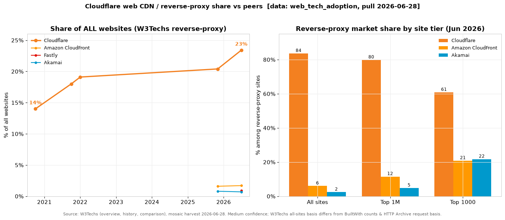
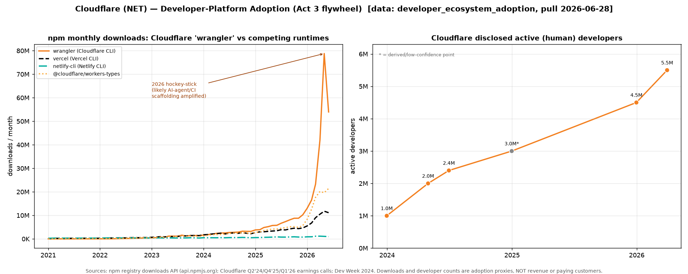
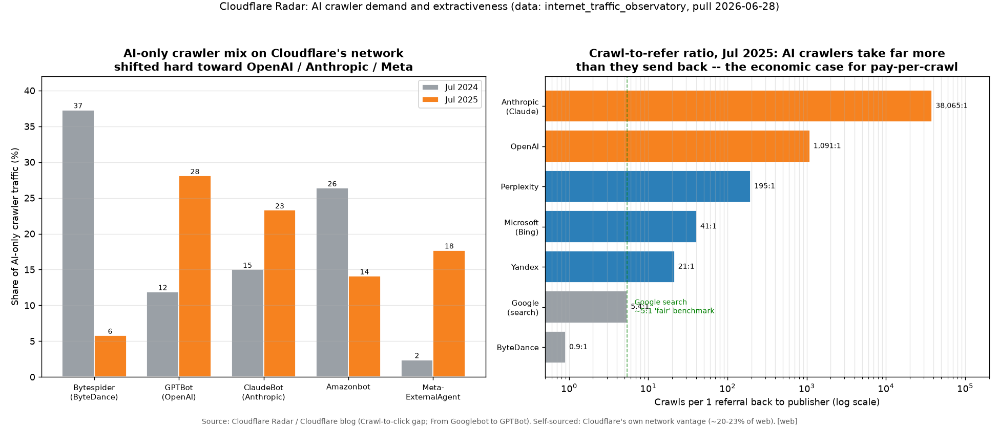
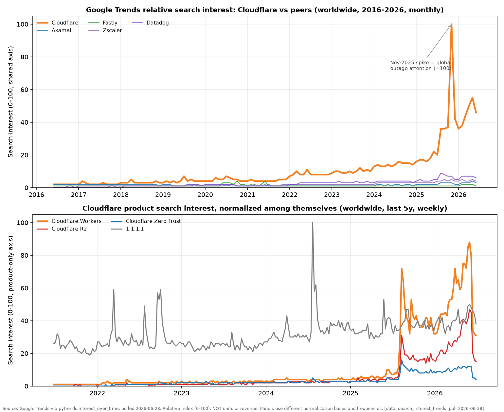
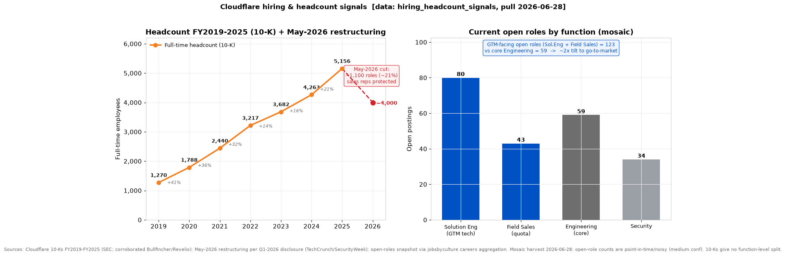
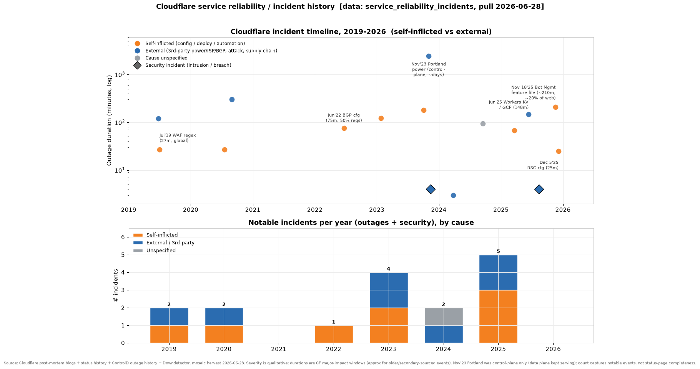

Cloudflare, Inc. (NYSE: NET) — Deep-Dive Dossier
Run date: 2026-06-28. Business understanding, financial history, and a driver-based forward model. This dossier makes no valuation judgment, no price target, and no buy/sell view.
Capitalization (as of 2026-06-26)
| Item | Value |
|---|---|
| Shares outstanding (Class A 317.6M + Class B 34.4M, 12/31/2025) | 352.0M |
| Current price (2026-06-26 close) | $237.24 |
| Market capitalization | $84,206M |
| Net debt / (cash) | $(639)M |
| Enterprise value | $83,567M |
Consensus multiples (BEst)
| Multiple (consensus, BEst) | FY2026E | FY2027E | FY2028E |
|---|---|---|---|
| Forward P/E (non-GAAP) | 198.0x | 147.9x | 107.5x |
| EV/EBIT (non-GAAP operating income) | 199.0x | 134.7x | 92.2x |
| EV/EBITDA (consensus) | 127.8x | 92.2x | 65.3x |
| Dividend yield | 0.0% | 0.0% | 0.0% |
Fiscal year end December 31. Price pull 2026-06-26; consensus pull 2026-06-28; basis Bloomberg / BEst, non-GAAP EPS. EV = market cap plus net debt; Cloudflare holds net cash, so EV sits below market cap. GAAP forward P/E is not meaningful: consensus GAAP EPS is $(0.26) in FY2026E and only crosses zero in FY2027E ($0.02). Cloudflare pays no dividend and has never repurchased stock. Descriptive market context only.
Run basis
| Field | Value |
|---|---|
| Run date | 2026-06-28 |
| Fiscal basis | Calendar year (December 31 FYE); FY2025 = year ended 2025-12-31 |
| Reporting entity | One reported and operating segment (CODM = CEO + President + CFO collectively) |
| Latest data cut | Q1 FY2026 (quarter ended 2026-03-31; 10-Q filed 2026-05-08) |
| Source refresh | 10-K FY2025 filed 2026-02-26; DEF 14A filed 2026-06-09; Investor Day 2026-06-09; Bloomberg/BEst pull 2026-06-28 |
| Scope | No valuation, no price target, no buy/sell view |
Global caveats
| Issue | Reading note |
|---|---|
| No product-line revenue | Cloudflare reports ONE segment and discloses revenue only by geography. The "Act 1-4" product framing (Application Services, Zero Trust/SASE, Developer Platform, Agentic) is an analytical lens with no disclosed revenue. Every per-act revenue figure here is [estimate]; the moat, growth-durability, and gross-margin destination questions all turn on a mix that cannot be measured from filings. |
| Gross margin is inflecting down, fast | The latest quarter (Q1 2026, 71.2% GAAP) is ~3-4 points below the FY2025 figure (74.5%) and below the 75-77% target. Wherever a section anchors on the FY gross margin, the live run-rate is lower; this is treated as a finding, not noise. |
| GAAP vs non-GAAP gap is large | FY2025 GAAP net loss was $(102.3)M while non-GAAP operating income was +$303.9M; the wedge is ~$490M of stock-based compensation and related payroll taxes (~23% of revenue). All guidance except revenue is non-GAAP. Interpret FCF and "profitability" with the SBC add-back in view. |
| Curated, not exhaustive, verification | 62 of 127 eligible claims were verified under tiered sampling; high-confidence claims with local citations are used as written. No sell-side digest (OC-Sellside) or 10-K redline coverage exists for NET, so consensus framing and risk-factor diffs lean one tier below curated sources (see Section 19). |
1. Business description, model & unit economics
Cloudflare sells subscription and usage-based access to one global network and an integrated suite of products that run on it.❝ The network spans 330+ cities in 125+ countries and interconnects with 13,000+ other networks; roughly 20% of the web sits behind it❝ (FY2025 10-K, "Our Network"; Investor Day 2026, 2026-06-09). The company describes its architecture as "serverless" because every product runs on every server in every city on commodity hardware, so a new product deploys everywhere at once and configuration changes propagate globally in seconds (FY2025 10-K, "Network Flexibility"). Revenue is recognized straight-line for fixed subscription consideration and in-period for usage (bandwidth overage and, increasingly, compute and storage). Contracted customers run one-to-three-year, mostly non-cancelable terms; self-serve Pro/Business plans bill monthly by card.
What management reports: one segment, disaggregated only by geography — US 49%, EMEA 28%, APAC 15%, Other 8% of FY2025 revenue❝ (FY2025 10-K). The economically meaningful unit Cloudflare exposes is therefore the customer, and the revenue equation is land-and-expand: existing-base revenue times dollar-based net retention, plus new-logo revenue.❝
What drives volume: a free tier that converts idle capacity into global scale. Free users generate traffic, which makes Cloudflare an attractive peering partner for ISPs, which lowers co-location and bandwidth cost, which funds more capacity (FY2025 10-K, "Our Network"). The CEO confirmed the funnel was booked as a marketing cost and that the free pool turned out to be heavily populated by developers who later pay (Q1 2026 call). The customer ladder runs free, to self-serve, to contracted enterprise. Roughly two-thirds of FY2025 revenue growth came from expansion within existing accounts and one-third from new logos❝: of the $498.3M of FY2025 growth, applying the 120% Q4 dollar-based net retention rate to the prior-year base implies about $334M of expansion and about $164M of new-logo revenue [estimate: Q4 point-in-time DBNRR applied to the annual base].
External developer-ecosystem data sizes this developer funnel on the adoption axis: wrangler npm downloads overtook the Vercel CLI around mid-2023 and reached 5.77M/mo (Jun-2025), 10.24M (Dec-2025) and 78.79M (May-2026) — roughly 7x the Vercel CLI and 70x netlify-cli, though the 2026 spike is amplified by AI coding agents and CI rather than 1:1 humans — while Cloudflare's disclosed active developers rose from ~2.4M (Q2-2024) to more than 4.5M (YE-2025) to more than 5.5M (Q1-2026) (see Appendix C [data: developer_ecosystem_adoption, pull 2026-06-28]).
What sets price: subscription plus usage, with a published enterprise price list rolled out in the second half of 2025. The deck-disclosed contract architecture is four structures — flat-rate self-serve, pure usage (pay-as-you-go), pool-of-funds (a committed dollar pool drawn down by usage), and a cap model (committed capacity with tiered overage), with the cap model the majority of contracts and "requests" the most significant unit of measure [deck: Investor Day 2026, slides 152-156]. Pool-of-funds was ~20% of Q4 2025 new annual contract value, which adds Q4-heavy, Q1-light seasonality and a usage-to-revenue lag: when traffic outpaces the cap, the model triggers early "upsizing," moving revenue earlier but lagging the underlying usage inflection [deck: Investor Day 2026, slides 153-155]. Remaining performance obligations were $2,495.8M at 12/31/2025, up 48% year over year with 63% expected within 12 months — backlog is growing faster than revenue❝ (FY2025 10-K, Note 3).
Customer concentration is a strength. No single customer was more than 10% of revenue in 2023, 2024, or 2025, and none was more than 10% of accounts receivable❝ (FY2025 10-K, Note). Large customers (over $100K of annualized revenue) were 69% of FY2025 revenue but spread across 4,298 accounts; the over-$1M cohort was just 269 accounts.❝
Unit economics
Cloudflare does not disclose a per-unit bill of materials or per-cohort margin, so the only unit-economics table buildable from filings is by customer cohort, with the cost side held at the blended 25.5% cost-of-revenue ratio (FY2025).
| Cohort (unit) | Count (Q4'25) | Realized price/yr | COGS/unit | Gross profit/unit | Implied GM | Reconciliation |
|---|---|---|---|---|---|---|
| Large (>$100K) | 4,298 | ~$348K [est] | ~$87K [est] | ~$261K [est] | ~75% (blended) | 69% of $2,167.9M = $1,495.9M (disclosed share) |
| of which >$1M | 269 | ~$1.5-2.0M [est] | n/d | n/d | n/d | ~$400-540M subset [est] |
| Other paying | ~328,168 | ~$2,048 | ~$522 [est] | ~$1,536 [est] | ~75% (blended) | 31% of $2,167.9M = $672.1M |
| Consolidated | 332,466 | blended $6,520 | $1,662 | $4,858 | 74.5% reported | Revenue $2,167.9M; COGS $552.5M; GP $1,615.4M |
The per-unit cost cells are [estimate: blended 25.5% COGS ratio applied uniformly] because Cloudflare discloses no per-cohort cost; the blended 74.5% gross margin is the only hard anchor, and per-unit COGS times units reconciles to reported COGS by construction. The honest limit: this confirms the aggregate, not the split. Large-customer margin is likely above blended (network fixed cost amortizes over committed enterprise spend) and usage-heavy compute customers below it. The per-product cut (Act 1 versus Act 3/4) cannot be built at any tier because revenue is not disaggregated.
Cohort retention rises with adoption. The average lifetime of a $1M+ customer is 70%+ longer than a sub-$100K customer, and customers running 10+ products are stickier than those running fewer [deck: Investor Day 2024, slides 95, 99]. The SaaS magic number (incremental revenue over prior-year sales-and-marketing) held 0.69, 0.62, 0.67 across 2023-2025 — a stable, healthy land-and-expand engine.❝ Cloudflare capitalizes sales commissions and amortizes them over a three-year estimated benefit period, consistent with a multi-year payback (FY2025 10-K).
Working capital funds growth. FY2025 operating cash flow was $603.1M on a $102.3M net loss because non-cash add-backs (SBC $451.5M, D&A $189.7M, commission amortization $101.6M) and a $223.8M increase in deferred revenue more than offset the cash drag from capitalized commissions and receivables. Deferred revenue was $725.3M at year-end, up 45%. Customers prepay, and the float partly funds the upfront commission and receivable build.
2. Key technologies & technical differentiators
Cloudflare's one durable technical asset is the network architecture: a single software stack running every product on commodity hardware in every location, fed by a free tier that turns idle capacity into ISP-peering leverage. On top of that sit two genuinely differentiated pieces — the V8-isolate compute model and a bot/agent-identification data advantage — plus one cost-structure feature (R2 zero-egress) that is more a pricing decision than a hard-to-copy invention.
The anycast "serverless" network. Because one stack runs everything, capacity grows cheaply and new products ship everywhere at once, and configuration changes that take other vendors hours propagate in seconds (FY2025 10-K). The free-tier flywheel is the central economic mechanism: more free traffic, more peering leverage, lower bandwidth and co-location cost, more capacity. A hardware root of trust (encryption chips embedded on server motherboards) lets Cloudflare deploy safely into untrusted locations including mainland China (FY2025 10-K). The architecture is the reason a network-owning business runs a ~75% gross margin on 12-15% capex intensity while capex-heavy peers do not.❝ What is hard to copy is the combination — single stack, free-tier scale, commodity-hardware economics, one control plane — not the existence of a global edge, which AWS, Azure, GCP, Akamai, and Fastly all operate.
Cloudflare Workers — V8 isolates. Workers runs customer code in V8 isolates, the sandboxing primitive a browser uses for tabs, instead of a virtual machine or container❝, which is why a Worker warms up in under 5 ms versus roughly 1-3 seconds for a Node runtime on a Lambda microVM (blog.cloudflare.com, accessed 2026-06-28 [web]; corroborated by independent benchmarks [web]). An isolate is about 5 MB of memory, and one runtime instance hosts hundreds-to-thousands of isolates, so the model is decisively better for spiky, ephemeral, agent-generated workloads. Management frames it as the fourth generation of compute (bare metal, VM, container, isolate) with ~10x price-performance and 0ms cold starts; the engineering reality is under 5 ms, effectively zero only because client-to-edge latency already exceeds it [deck: Investor Day 2026, slide 9]. Active developers grew from 350K (Nov 2021) to 4.5M (Dec 2025) to 5.5M (Mar 2026), with +1M in Q1 2026 alone [deck: Investor Day 2026, slide 17; Q1 2026 call]. Named adopters include Figma, Lovable, Anthropic, and OpenAI.
The isolate concept is being copied. By 2026 Vercel's Edge Runtime and Netlify's Edge Functions (built on Deno) had converged on V8-isolate-style edge runtimes❝ (daily.dev, zylos.ai, accessed 2026-06-28 [web]: "All three platforms rely on V8 isolates"). So the runtime idea is not a permanent secret; the moat is running it across 330+ cities with co-located storage primitives and a free-tier developer funnel feeding it. The trade-off Cloudflare accepted is also the limit: isolates cannot run an arbitrary Linux binary and cap execution time, which keeps heavy, stateful, long-running workloads on VMs and containers.
The cost advantage is workload-specific, not universal, by Cloudflare's own disclosure. Its TCO slide shows AWS EC2 about 15.2% cheaper for a steady single-region web app serving 1B requests/month, while Cloudflare is 63.6% cheaper for 10K agent-generated apps per day and 74.7% cheaper for 1M agent sessions per month❝ [deck: Investor Day 2026, slide 44]. The blanket "lowers TCO" framing averages across the agentic cases.
Storage and data primitives — R2. R2 is S3-compatible object storage with the egress fee set to zero, versus AWS S3 at roughly $0.05-0.09/GB to the internet❝ [web, unverified — public list pricing, not re-verified this run]. Zero egress reverses lock-in: customers can move data between clouds without paying an exit tax. The harder-to-copy piece is co-location — R2, D1, Workers KV, Durable Objects, Hyperdrive, and Queues sit on the same edge as Workers compute, which a hyperscaler's regional-zone architecture cannot match for edge workloads. Zero egress is a pricing choice a hyperscaler could match but would resist, because egress is one of their most profitable lines.
AI inference at the edge — Workers AI, AI Gateway, Vectorize. Cloudflare deploys GPUs across the network (190 cities as of March 2025) and offers serverless inference, a model-routing gateway, and an embeddings store. Management claims it gets "as much as 10x the amount of work" from a GPU versus a hyperscaler by driving utilization toward CPU-like 70-80% versus single digits (Q4 2025, Q1 2026 calls) — directionally consistent with the architecture but not independently verifiable. This is the most contested arena: hyperscalers and the AI labs themselves hold far more GPU capacity, and it is the layer dragging gross margin down today.
Bot/agent identification — the data advantage. Because ~20% of the web sits behind Cloudflare, it sees every IP address roughly seven times a day and classifies bot-versus-human (and now agent) traffic at a scale rivals cannot match❝ (Investor Day 2026). Management states no other bot-management provider has comparable data breadth and depth, and that once a customer uses the dashboard to monetize content rather than just block it, "a product that could have become a commodity is now price inelastic" (Investor Day 2026). This is the most genuinely defensible data advantage, and it strengthens with scale. It is also the heart of "Act 4" (AI Crawl Control, pay-per-crawl, content marketplace, x402 payment rails) — technology that is shipped but largely pre-revenue, and the single largest gap between the forward narrative and realized economics.
If the business has a technical core, it is the network plus the isolate runtime plus the bot-signal data, not a patent thicket: Cloudflare held 381 issued and 58 pending US patents at 12/31/2025, modest for its profile (FY2025 10-K).
3. Competitive advantages & moat assessment
Cloudflare's advantage is real but contestable, and its excess-return promise is still unproven in the numbers.❝ The genuine, durable asset is the global anycast network plus the free-tier cost-of-serve flywheel, built over roughly 16 years, and its financial evidence shows most clearly in gross margin: Cloudflare runs a 74.5% FY2025 gross margin while owning physical network infrastructure, about 16 points above the two pure CDN/network peers that own the same kind of infrastructure (Akamai 58.9%, Fastly 57.1%)❝. That gap is the cost-of-serve scale advantage made visible, and it is the strongest single piece of evidence for a real advantage in the legacy application-services layer.
Three facts pull it down from structural to contestable.
- No excess returns yet. Sixteen years in, at $2.2B revenue, Cloudflare still posts a GAAP operating loss every year (FY2025 $(207.2)M, -9.6% margin), and the loss widened in absolute dollars in 2025 despite 30% revenue growth.❝ GAAP ROIC is negative. The FY2025 free cash flow of $260.6M (12% margin) is real progress but is more than fully accounted for by adding back $451.5M of stock-based compensation; net of SBC the business does not yet generate positive economic profit. This is not the Visa or Google profile of throwing off excess returns without heavy reinvestment.
- The competitive mode is cost leadership, not pricing power. Management's own framing — "whoever had the lowest cost to serve customers would win," R2 with zero egress, agent-app TCO 60-70% cheaper (Investor Day 2026) — is a low-price disruption strategy. Cost leadership can be a moat, but it shows up as share gains at compressed margins, not as realized price outrunning input cost.❝ The financial evidence confirms it: gross margin is compressing, not pricing power expanding.
- The clearest evidence of the moat is eroding now. GAAP gross margin declined from 77.3% (FY2024) to 74.5% (FY2025) to 71.2% in Q1 2026 — the lowest in Cloudflare's public history, below the 75-77% long-term target — across eight consecutive declining quarters❝, driven by the fastest-growing, lowest-margin layers (developer platform, Workers AI, R2) and by free-to-paid graduations moving cost from sales-and-marketing into COGS. The move into the highest-growth layer is dilutive to the very metric that demonstrates the moat.❝ Meanwhile pure-software peers held their gross margins (Datadog 79.9%, Zscaler 76.9%), so the gap against the best software comps is widening against Cloudflare.
A fourth contestability signal sits outside the financials: because the product is uptime, the clustering of self-inflicted global outages in 2025 — including the Nov-18 event that disrupted roughly 20% of the web — directly tests the premise that network reliability is a durable differentiator, and the exposure is reputational at the large customers that are ~72-73% of revenue (see Appendix C [data: service_reliability_incidents, pull 2026-06-28]).
The assessment rests on three groundings.
Management claims: scale is the moat ("more than 20% of the web already sitting behind Cloudflare's network, we are effectively the global control plane for the agentic Internet," Q4 2025 call); the lowest-cost-to-serve flywheel; the integrated single network and single control plane as an N-of-1; and the free tier as a developer funnel. A deck scorecard rates Cloudflare "Strong" on all six architecture dimensions while Zscaler, Netskope, Cisco, VMware, and Fortinet rate "Weak" on most [deck: Investor Day 2024, slide 33].
External sources: analyst views split between the AI-infrastructure theme and bears focused on valuation and margin. Gross-margin compression is the consensus bear point and is corroborated by the filings (TIKR, accessed 2026-06-28 [web]: GAAP gross margin "compressed from 78% in June 2024 to 71% in March 2026"). AWS launched CloudFront flat-rate plans bundling CDN/WAF/DDoS/DNS in November 2025, which makes "Cloudflare at the perimeter" less universally compelling for AWS-native customers (inventivehq.com, accessed 2026-06-28 [web, unverified — lower-credibility source, treat as directional]).
Ground-up view: the industry has two structurally different layers. In application services and edge security (Act 1/2), minimum efficient scale is high — a global anycast network with thousands of peering relationships and a free tier that makes peering free — so a genuine scale-cost flywheel operates, and the 16-point gross-margin lead over Akamai/Fastly proves it. But it caps as a cost/neutrality advantage, not a pricing-power one. In developer compute, object storage, and AI inference (Act 3/4), the relevant competitors are the hyperscalers, whose compute scale and capital dwarf Cloudflare's; the wedge is architectural and price-based (low-end disruption), so success there mechanically dilutes consolidated gross margin, and incumbents respond on bundling. Management's "scale is our moat" is correct about the Act-1 network but overstated as a company-wide pricing-power claim.
Mapping each claimed source of advantage to its evidence test:
| Claimed source | Evidence test | Standing |
|---|---|---|
| Scale / cost-of-serve | Margin gap that widens with volume | Real vs CDN peers (+16pts); but eroding at the consolidated level, not widening |
| Switching costs / integration | Retention and renewal pricing | DBNRR 120% (Q4'25), up from 111% trough; volatile, good not exceptional |
| Network effects (developers/agents) | Share and engagement compounding | 4.5-5.5M developers, agentic traffic +1,700% YoY; monetization undisclosed, unproven in margin |
| Data / threat intelligence | Product/pricing advantage from data | ~20% of web visibility is real input to product quality; Act-4 monetization pre-revenue |
| Brand / neutrality | Pricing premium or preferential selection | Supports selection (40%+ of Fortune 500); no price premium — strategy is explicitly cheaper |
| Cost position | Realized cost below rivals at scale | The core moat — but spent on low prices, so it lands as share, not profit |
Financial rigor — three ways
ROIC = GAAP operating income (NOPAT proxy; cash taxes immaterial under NOLs) / invested capital, where invested capital = stockholders' equity + total debt − cash − AFS securities. For net-cash software/infra names the denominator is small and ROIC is volatile, so GAAP operating margin and FCF margin are the more stable returns signals. Cost-of-capital reference ~10-12%.
Standalone. Five-year revenue CAGR (FY2020-FY2025) was 38.1%, top-tier and sustained. Gross margin held a high-70s band for the company's public life until FY2025 (74.5%, the lowest on record) and Q1 2026 (71.2%, lower still). GAAP operating margin improved steadily from -37.6% (2019) to -9.3% (2024) but stalled at -9.6% in 2025, with the absolute loss growing. GAAP ROIC is negative every year; the genuine positive signal is cash — FCF margin went from -21% (2020) to +12% (2025) — but FCF is flattered by the $451.5M SBC add-back (SBC alone exceeds FCF) and by deferred-revenue inflows.
Versus peers (latest full fiscal year; note mixed fiscal-year ends — ZS/PANW are July):
| Company | FYE | Rev ($M) | YoY | GM% | GAAP op margin% | R&D% | Capex% | FCF% |
|---|---|---|---|---|---|---|---|---|
| NET (Cloudflare) | Dec'25 | 2,167.9 | +30% | 74.5 | -9.6 | 23.6 | 15.8 | 12.0 |
| Akamai | Dec'25 | 4,208.2 | +5% | 58.9 | +13.5 | 12.2 | 19.5 | 16.6 |
| Fastly | Dec'25 | 624.0 | +15% | 57.1 | -19.1 | 26.1 | 7.4 | 7.7 |
| Zscaler | Jul'25 | 2,673.1 | +23% | 76.9 | -4.8 | 25.2 | 9.2 | 27.2 |
| Palo Alto | Jul'25 | 9,221.5 | +15% | 73.4 | +13.5 | 21.5 | 2.7 | 37.6 |
| Datadog | Dec'25 | 3,427.2 | +28% | 79.9 | -1.3 | 45.2 | 4.0 | 26.7 |
Most-recent-quarter cross-check (apples-to-apples, since fiscal years are misaligned): Cloudflare Q1 2026 gross margin 71.2% (lowest on record, growth accelerating to +33.5%); Akamai 56.1% GM on +5.8%; Zscaler 77.3% on +25.4%; Datadog 79.2% on +32.2%; Palo Alto's +31.2% reported growth is inflated by the CyberArk acquisition (organic ~15%). Cloudflare's gross margin sits above both network-owning peers (the scale advantage made visible) but below the pure-software peers, and it is the second-most capital-intensive name in the set because, like Akamai, it owns physical network. Its GAAP operating margin (-9.6%) is the second-worst in the set, and its FCF margin (12%) the second-lowest — even on cash, it monetizes scale less efficiently than the asset-light software peers today, partly structural (network capex) and partly the SBC/growth-investment choice.
Over time. The gross-margin lead over CDN peers is stable-to-narrowing in Cloudflare's favor (still ~16 points ahead, but its own margin declined ~3 points since 2024 while Akamai held). The gap versus software peers is widening against Cloudflare: it went from roughly level with Datadog (FY2024: 77.3% vs 80.8%) to ~8 points behind (Q1'26: 71.2% vs 79.2%) in eight quarters. The operating-margin gap versus the profitable peers narrowed 2019-2024 then stopped closing in 2025.
Where it lands: not the top tier (a structural advantage durable against well-funded attackers, supporting pricing power and excess returns with little reinvestment) — Cloudflare's most direct attackers in its fastest-growing layer are the hyperscalers, and it competes with them on price and neutrality, not scale superiority. Not the bottom tier either — the 16-point gross-margin lead over CDN peers, 120% net retention, 4.5M+ developers, and improving cash conversion are real. It sits in the middle: a high-durability network and integration advantage that is genuine and earned, paired with unproven excess returns, a cost-leadership rather than pricing-power mode, and a gross margin that is presently eroding as the mix shifts to compute and AI. Durable asset; contestable economics. Management's own analog for the margin path is Microsoft's Intelligent Cloud (Azure grew from 4% to 71% of segment revenue as gross margin declined 76% to 62% while operating margin held ~42%)❝ — the lower-GM-but-rising-unit-economics case it wants underwritten [deck: Investor Day 2026, slide 175].
4. Competitive landscape & market sizing
Cloudflare is the runaway scale leader in CDN/reverse-proxy/managed DNS by property count and traffic, and the fastest grower among application peers, but it is sub-scale in the two growth markets that anchor the bull case (Zero Trust/SASE and developer compute).❝
External web-technology data corroborates the share gain: Cloudflare's reverse-proxy share of all sites rose to 23.4% by mid-2026 while Akamai, Fastly, and CloudFront all lost share, though among the top-1,000 sites it remains a three-way race with CloudFront (~21%) and Akamai (~22%) (see Appendix C [data: web_tech_adoption, pull 2026-06-28]).
Market structure. Three structurally different markets with different price-setters. CDN/web-infrastructure (Act 1) is fragmented by property count and concentrated by enterprise traffic; the buyer increasingly sets price as raw delivery commoditizes (Akamai's delivery revenue is in secular decline). Zero Trust/SASE (Act 2) is a Gartner-defined oligopoly where the pure-play platform vendors set price under multi-year, high-switching-cost contracts. Developer/edge compute (Act 3) is a hyperscaler oligopoly (AWS ~30%, Azure ~25%, GCP ~13% of a ~$918B cloud market) where Cloudflare competes only at the edge-serverless fringe.❝ No customer is more than 10% of revenue; channel partners are ~26% of revenue and rising.
Market sizing — management TAM versus served market. Management presents a TAM of ~$238B for 2026 rising to ~$384B by 2029, "calculated by Cloudflare based on Gartner research," composed of Application Services + Cloudflare One + Developer Services + Act IV [deck: Investor Day 2026, slides 162, 29]. The figure is genuine in direction but broad: it sums dozens of Gartner categories, including several where Cloudflare has near-zero share (SD-WAN, MPLS, privileged-access management, object storage versus S3, IoT, 5G). The verifiable facts are that the 2026 TAM is ~$238B, roughly 7x higher than eight years ago, and grows as products and Acts are added (management attributes ~$40B of the latest increase to adding developers for the first time). The realistic near-term served market — CDN, SSE, SASE, and the edge-compute slice Cloudflare can address — is far smaller, on the order of $60-80B❝ [estimate: sum of served-market third-party sizings; CDN ~$30B + SSE ~$8B + SASE ~$13-19B + edge slice, [web]], so penetration of the served core is roughly mid-single-digit percent rather than the ~1% headline.
Peer scale & KPI — Application Services (Act 1: CDN / WAF / DDoS / DNS / bot)
| Player | Scale KPI | Revenue scale | Share & direction | Growth track record | Segment margin |
|---|---|---|---|---|---|
| Cloudflare | 23.4% of all websites; ~83.5% of monitored reverse-proxy market; >20% of web traffic; 41M+ sites; largest managed DNS | App Services not disclosed; consol. $2,167.9M; ~$1.2-1.5B [est] | #1 by property count, gaining (reverse-proxy ~80%→83.5%) | Consol. +30% FY25, +33.5% Q1'26; paying customers +40% | Consol. GM 75% (71.2% Q1'26) |
| Akamai | 4,300+ PoPs, 700 cities | $4,208.2M (+5%); Security $2,243.4M (+10%), Delivery $1,256.7M (-5%), Compute $708.1M (+12%) | Revenue leader; website share tiny (0.7%); Delivery losing share | Security 2yr +12.7%, Delivery -9.7%, Compute +18.5% | GAAP GM ~59% |
| Fastly | 628 enterprise customers; NRR 110% | $624.0M (+15%) | Niche; 3.2% reverse-proxy; stable-to-gaining | Rev 2yr +11%; NRR 102%→110% | GM 57.1% |
| Amazon CloudFront | 1.7% of websites; #2 reverse-proxy | Undisclosed (inside AWS) | #2 by property count, bundled with AWS | Grows with AWS (+28%) | n/a |
Sources: w3techs.com, accessed 2026-06-28 [web]; Akamai/Fastly 10-Ks FY2025 and 10-Qs. Cloudflare is the scale leader by every property/traffic/DNS metric and the only accelerating player; Akamai is about 2x larger by revenue (its base skews to high-traffic enterprises) but barely grows and is shrinking in delivery. Cloudflare grows about 6x faster than Akamai, and the gap is closing.❝
Peer scale & KPI — Zero Trust & SASE (Act 2: "Connectivity Cloud")
| Player | Scale KPI (ARR / customers) | Revenue scale | Gartner position | Growth | Margin |
|---|---|---|---|---|---|
| Cloudflare One | Zero-Trust ARR not disclosed; DBNRR 120% (all-product) | undisclosed; [est: low single-digit-hundreds $M] | Visionary, not leader (up from 2024 Niche Player) | consol. +30%; SASE-suite ARR +43% in 2025 | consol. GM 75% |
| Zscaler | ARR $3,525M (Apr'26, +25%); >9,400 customers; DBNRR 114% | Rev $2,673.1M (+23%) | SSE leader (#1 in ability to execute, 2025) | ARR +25% | GM ~80% |
| Netskope | ARR $845M (Apr'26, +29%); ~1,600 customers >$100K | Rev ~$870M guide (~23%) | SASE & SSE leader | ARR +29% | GM ~75% |
| Palo Alto (Prisma SASE) | Next-Gen-Security ARR $5,600M FY2025 (+33%) | Total rev $9,221.5M (+15%) | SASE leader | NGS ARR +33% | GM ~74% |
Sources: Zscaler Q3 FY26 press, Netskope Q1 FY27 press, Palo Alto 10-K FY2025 (NGS ARR line 3260), Gartner MQ coverage via trade press, all accessed 2026-06-28 [web]; ZS/PANW 10-Ks and 10-Qs. This is where the bull case is weakest on scale: Cloudflare One is sub-scale and Gartner-rated below the pure-plays in the exact category management brands as its future❝. Zscaler and Palo Alto each run ARR several multiples of any plausible Cloudflare One ARR, and even Netskope, the smallest named pure-play, almost certainly exceeds it. The pure-plays are not growing slower — all grow 25-33%, at or above Cloudflare's consolidated +30% — so Cloudflare is not clearly faster in the category either; its edge here is the integrated single-network bundle and free-tier funnel, and Cloudflare One's own SASE-suite ARR grew +43% in 2025 off a smaller base. Gartner's 2025 Magic Quadrants place Cloudflare as a Visionary in both SSE and SASE, not a leader (SSE leaders Zscaler/Netskope/Palo Alto; SASE leaders Palo Alto/Netskope/Cato/Fortinet); this sits in tension with the "leading connectivity cloud" framing, though connectivity cloud is Cloudflare's own broader, self-defined category [web].
Peer scale & KPI — Developer Platform (Act 3: Workers / R2 / edge compute)
| Player | Scale KPI | Revenue scale | Position | Growth |
|---|---|---|---|---|
| Cloudflare (Workers/R2) | 4.5-5.5M active developers; R2 zero-egress; V8-isolate compute | usage-based, not disclosed [est: <$200M] | edge-serverless mindshare leader; sub-scale in revenue | developer-platform ARR +137% in 2025 |
| AWS (Lambda/S3) | dominant serverless + object storage base | ~$117B run-rate (+28%); 30% cloud share | incumbent default | +28% |
| Microsoft Azure | hyperscale | ~$107B run-rate (+40%); 25% share | #2 | +40% |
| Google Cloud | hyperscale | ~$49B run-rate (+63%); 13% share | #3, fastest | +63% |
Cloudflare leads developer/edge-serverless mindshare and the egress-fee-disruption narrative, but its developer-platform revenue is two-to-three orders of magnitude below the hyperscalers it lists as competitors; the whole stack it monetizes (~$2.2B) is under 1% of the ~$918B cloud market❝. This is a wedge and an option, not a scale position — though developer-platform ARR grew +137% in 2025 off that small base [web; Investor Day 2026].
Share counter-evidence, ranked.
- Gartner does not rate Cloudflare a leader in SASE or SSE [web].
- Akamai's revenue base is ~2x Cloudflare's despite a ~30x website-count deficit — Cloudflare under-monetizes the high-traffic enterprise tier where the dollars concentrate.
- Hyperscalers in-house everything Act 3 sells, at 50-450x the revenue scale and faster growth.
- CDN delivery is commoditizing (Akamai delivery -9.7%/yr), a structural drag on Act-1 pricing.
- Palo Alto's ~$25B CyberArk deal adds a better-capitalized attacker consolidating the security stack Cloudflare wants to enter.
5. Value chain & profit pools
Cloudflare owns its network and is the price-setter at the customer interface, so it captures the whole recognized revenue dollar; the chain is short upstream and more interesting downstream. The two directions that matter are the ~25.5 cents of cost-of-revenue flowing to input suppliers and the rising share of the customer relationship the channel intermediates.
The marginal cost dollar is leaving the owned network. Cloudflare discloses only year-over-year COGS increases, not run-rate composition, but the marginal decomposition is the more decision-relevant number:
| Driver | FY2024 Δ | FY2025 Δ | Q1 2026 Δ (YoY) |
|---|---|---|---|
| Third-party technology services | $32.6M | $59.2M (34%) | $30.9M (45%) |
| Co-location + network + bandwidth | $23.9M | $54.1M (31%) | $15.7M (23%) |
| Depreciation (server/GPU deployments) | ~$15.4M | $45.2M (26%) | $11.6M (17%) |
| Employee-related | — | $9.1M (5%) | $7.1M (10%) |
| Total COGS increase | $71.7M (+23%) | $173.8M (+46%) | $68.6M (+59%) |
The marginal cost dollar is increasingly leaving Cloudflare's owned network for third-party technology and compute suppliers — from 34% of the FY2025 COGS increase to 45% of the Q1 2026 increase❝ (FY2025 10-K MD&A; Q1 2026 10-Q). The historical story is that Cloudflare owns its network (commodity servers in controlled co-location), which underpins the 75-77% margin; the newest, fastest-growing products (Workers AI, developer platform) lean on bought-in third-party compute, which is structurally lower-margin. The "third-party technology services" line is undefined in the filings — whether it is GPU/compute capacity, model-API costs, or other infrastructure determines whether the margin compression is permanent variable cost or transitional capacity-ahead-of-revenue.❝ This is the single most important unanswered question for the gross-margin destination.
Dollar split at the customer interface. For the ~74% Cloudflare keeps and ~26% it pays to inputs, the upstream layers are co-location (Equinix/Digital Realty-class, negotiated long-term), bandwidth/peering (shifting toward Cloudflare as scale grows settlement-free peering), commodity servers and GPUs (supplier-priced, GPU pricing power with the vendor), third-party technology services (the fastest-growing slice), and certificate authorities/payment processors (small). Downstream, channel partners — value-added resellers and global systems integrators — sourced $568.9M, or 26% of FY2025 revenue, up from 20% (FY2024) and 16% (FY2023)❝. On channel-sourced deals the reseller keeps a distributor margin (~15-25% [estimate: typical IT VAR margin; Cloudflare does not disclose partner discounts]) on top of Cloudflare's booked net price, so a growing slice of the end-market profit pool moves to intermediaries and the directness of the customer relationship dilutes as Cloudflare moves up-market.
Binding constraint. The company-map hypothesis — enterprise go-to-market capacity, not the network — holds. Non-cancelable bandwidth and co-location commitments total only $179-255M against $2.17B revenue, a light, short-dated book, and the free-tier flywheel makes the network cheaper as it grows. GPU/AI compute supply is an emerging constraint Cloudflare is pre-funding ($10.0M of equipment advance payments in Q1 2026). The constraint on profit-pool capture, distinct from volume, is shifting upstream: the owned-network cost advantage is intact for Act-1/2 traffic but does not extend cleanly to the bought-in compute behind Act-3/4.
Customer-side economics. R2 zero-egress is the clearest customer-return argument: for egress-heavy workloads (content distribution, AI-data serving, multi-cloud) the all-in cost of storage-plus-retrieval can be a multiple lower than S3, and it removes the exit tax that locks data inside a hyperscaler. The return is avoided cost and avoided lock-in, not a depreciable payback. The tension: the supplier (Cloudflare) earns less gross margin on the products growing fastest, which resolves only if scale and the GPU scheduler drive blended unit cost down faster than mix drags margin — unproven.
Circularity. A slice of Cloudflare's growth is circular and AI-cycle-dependent. The major AI labs are simultaneously suppliers of the models Cloudflare resells access to, customers of its compute (one studio went from zero to over one million Dynamic Workers in 15 days), and the crawlers that Act 4's pay-per-crawl model intends to toll. There is no material vendor financing or customer equity stake; the only chain-level prepayment runs the other way (Cloudflare pre-paying suppliers). Act 4 is pre-revenue optionality, not a modeled line.
6. Secular & industry trends
The dominant 2025-2026 demand driver is the AI re-platforming of the Internet — more traffic, more bots and agents to manage, more inference and compute at the edge.❝ The end customer spans every Internet-facing business (Act 1), every enterprise replacing on-prem network and security hardware (Act 2), every developer and AI company needing global compute (Act 3), and emerging agentic-commerce participants (Act 4). Breadth dampens cyclicality: no customer is more than 10% of revenue, and revenue is geographically diversified.
Cloudflare's own Radar observatory quantifies that driver: AI and search crawler traffic grew +18% YoY on same customers (+48% including new) and agentic 'user-action' crawling rose more than 15x in 2025, with the most extractive crawlers now belonging to identifiable, well-capitalized US labs — Anthropic at a 38,065:1 crawl-to-refer ratio and OpenAI at 1,091:1 against Google search's ~5:1 — the empirical backbone of pay-per-crawl (see Appendix C [data: internet_traffic_observatory, pull 2026-06-28]).
Share math. Cloudflare grew ~30% in FY2025 against a blended end-market growth of roughly 15-18%, implying share gains at ~1.7-2x the market rate.❝ The disclosed product-line ARR growth supports this: Cloudflare One (SASE suite) ARR +43% versus a SASE market growing ~25% (gaining at ~1.7x, and outrunning Zscaler's +21-22%); developer-platform ARR +137% versus any market estimate (large share gain off a tiny base); and consolidated ~30% against a flat-to-declining CDN market (Akamai delivery -9.7%), so Cloudflare is taking delivery share. The share gain is real and visible in segment ARR rates outrunning peers; it does not rest on the inflated headline TAM.
The margin counter-signal. The same AI tailwind that lifts the top line compresses the premium gross margin.❝ GM declined from ~79% (early 2024) to 72.8% non-GAAP (Q1 2026), driven by the free-to-paid traffic mix moving cost into COGS and by the developer platform (lower GM, +137% ARR) growing fastest. Management widened the long-term GM target to 70-77% (from 75-77%)❝ and now says GM "may continue to trend down in the near term," reversing the 2024 framing of GM "in the range of 80%" and a "25% FCF margin moving forward" (Q1 2026 was 13%). The rebuttal is that unit-economic margin still rose (to ~44% exiting 2025) because developer products have lower cost-to-book — a forward claim, not yet in reported GM.
Cyclical versus secular. Cloudflare has lived through one demand cycle since its 2019 IPO. The +52% 2021 peak was a cyclical, COVID/zero-rate high; the deceleration to a +27% trough (Q4 2024) was law-of-large-numbers (the biggest factor), macro IT-budget digestion, and a self-inflicted go-to-market disruption (the ~2-year retooling from product-led growth to enterprise sales). The reacceleration to +34% (2025-2026) is mostly secular plus execution recovery: AI traffic and the developer platform, GTM productivity recovery (up nine consecutive quarters, partly reversing the self-made hole), and large-customer expansion. Structural cyclicality is low — almost 100% of revenue is subscription/committed (pure usage under 10%), RPO is $2.50B (+48%), and diversification is broad❝ — but the recent reacceleration should not be fully extrapolated, because part of it is recovery rather than new demand.
Tailwinds and headwinds. Tailwinds: AI/agentic traffic (the dominant driver); the appliance-to-cloud SASE replacement cycle; egress-fee disruption (R2); and data-sovereignty regulation favoring a geo-distributed network. Headwinds: hyperscaler substitution if inference consolidates in their data centers rather than the edge; AI agents bypassing the traditional CDN/WAF architecture (Act 4 is the hedge but pre-revenue); and a slow-moving tail risk that KYC/age-verification regulation could impose a per-user cost on the free tier that underwrites Cloudflare's scale advantage. The earliest KPIs that would flash if the secular story were breaking, in lead-time order: new-ACV bookings growth, DBNRR, large-customer adds, paid-traffic growth, developer count, and RPO growth.
7. Critical points
-
Growth is reaccelerating while gross margin is compressing — a two-signed inflection. Revenue grew +33.5% in Q1 2026 (above FY2025's +30%) on AI demand, but gross margin declined to 71.2% from 75.9% a year earlier, below the 75-77% target, with third-party technology services the #1 cost driver. The accelerating growth is coming at structurally worse unit economics than the legacy core (see Section 8).
-
The clearest evidence of the moat is eroding. The 74.5% gross margin — ~16 points above Akamai/Fastly — is the scale advantage made visible, but it has fallen for eight straight quarters and the gap versus pure-software peers (Datadog 79.2%, Zscaler 77.3%) is widening against Cloudflare. The fastest-growing layer is the lowest-margin one, so success dilutes the metric that demonstrates the moat (see Section 8).
-
"FCF positive" is funded by stock compensation. Cumulative SBC 2017-2025 was $1,479.9M against cumulative FCF of +$177.9M; FCF-less-SBC was -$1,302.0M. In FY2025 alone SBC ($451.5M) exceeded FCF ($260.6M). The gap is closing (FCF-less-SBC improved from -11.9% of revenue in 2023 to -8.8% in 2025), but owner economics costed for stock comp remain negative (see Section 8).
-
GAAP profitability is later than the cohort. At $2.2B revenue Cloudflare runs a -9.6% GAAP operating margin and the loss widened in 2025; the SaaS reference class mostly turns GAAP-positive between $2.5B and $3.5B. The net loss is cushioned by $122.5M of net interest income on the ~$4.1B cash/AFS pile, not by operating improvement.
-
Cloudflare One is sub-scale in the category management calls its future. Zscaler ARR $3,525M and Palo Alto NGS ARR $5,600M dwarf Cloudflare One's undisclosed (small) Zero-Trust ARR; Gartner rates Cloudflare a Visionary, not a leader, in both SSE and SASE. The edge here is the integrated bundle, not category scale (see Section 8).
-
The guidance record is strong, with one scar. Twenty of 21 next-quarter revenue guides beat the high end (one in-range, zero misses); 21 of 21 non-GAAP operating-income guides beat. The lone full-year revenue miss was FY2023, a self-described go-to-market execution failure, after which management reverted to its conservative pattern.
-
The capital structure is a tailwind. $3.29B of 0%-coupon convertible notes sit against ~$4.1B of AA-rated cash/AFS, producing +$122.5M of net interest income in FY2025. The $1,293.75M 2026 Notes (due Aug 2026) are covered ~3.2x by liquidity and intended for cash settlement, which is why FY2026 share guidance is ~377M rather than higher.
-
Founder control is being made permanent. Insiders hold ~52.4% of votes on ~10% of the economics; the 2026 recapitalization replaces the decaying dual-class structure with a service-conditioned 9-vote preferred and creates non-voting Class C stock to keep funding ~$490M/yr of equity comp and acquisitions without eroding founder votes (see Section 10).
-
The 2026 restructuring hits the engine during its rebuild. A ~1,100-role cut (~21% of headcount, $140-150M charge) executed during the very sales-productivity retooling management calls the binding constraint, with quota-carrying reps said to be protected. Execution and culture risk are real (see Sections 8, 18).
8. Variant perceptions
-
Consensus: rising FCF proves the moat is converting to profit. Evidence against: FY2025 FCF of $260.6M is exceeded by $451.5M of SBC added back; net of SBC, economic profit is roughly neutral and the GAAP operating loss widened to $(207.2)M. Quantification: SBC 20.8% of revenue, FCF 12.0%, the difference +8.8 points of revenue. The profitability inflection is a cash/non-GAAP phenomenon flattered by dilution.
-
Consensus: scale gives Cloudflare a margin moat. Evidence against: the scale-margin advantage is eroding, -6.1 points from ~77.3% (FY2024) to 71.2% (Q1 2026) across eight straight quarters, while pure-software peers held high-70s/80. The gap to Datadog widened from ~3.4 points behind to ~8 points behind in eight quarters.
-
Consensus/management: Cloudflare is a leading SASE/Zero-Trust "connectivity cloud." Evidence against: Gartner places Cloudflare as a Visionary, not a leader, in both SSE and SASE (2025); Zscaler ARR $3,525M and Palo Alto NGS ARR $5,600M are several multiples of any plausible Cloudflare One ARR, and all the pure-plays grow 25-33%, at or above Cloudflare's consolidated +30%. (The original workpaper claim that pure-plays are "neither bigger nor faster" overstated the case; the pure-plays are larger and grow at least as fast in the category, so Cloudflare is not the scale or speed leader there.) [web]
-
Consensus: the $238B TAM, ~1% penetrated, means vast runway. Evidence against: the ~1% headline has held across four investor days while revenue 4x-ed, because the TAM was re-sized upward each year by stacking new adjacent categories ($32B in 2018 to ~$238B in 2026), several of which Cloudflare barely competes in. The verifiable facts are $238B for 2026, ~7x in eight years, growing with product additions; the realistic served market is far smaller, on the order of $60-80B [estimate], so served-market penetration is mid-single-digit percent rather than ~1%.
-
Consensus: isolates are a proprietary moat. Evidence against: by 2026 Vercel's Edge Runtime and Netlify/Deno had converged on V8-isolate-style edge runtimes, so the runtime concept is copyable [web]. (The claim that "Vercel runs on Cloudflare's own edge infrastructure" is not supported and is dropped.) The durable moat is network scale plus co-located storage primitives plus the developer funnel, not the isolate idea alone.
-
Consensus: AI is an unambiguous tailwind. Evidence against: AI/developer growth is the lowest-margin revenue; consolidated GM declined ~600bps from the early-2024 ~79% peak to 72.8% (Q1 2026), and the long-term GM target was cut to 70-77%. The tailwind lifts the top line and compresses the premium margin.
-
Consensus: reacceleration to +34% proves the secular story. Evidence against: much of the 2023-2024 slowdown was self-inflicted (GTM retooling plus sales-leadership churn), so part of the reacceleration is recovery from a self-made hole; and FY2026 guidance (+30%) plus the $5B target (now "before 2028," ~28-29% CAGR) both embed deceleration below the +34% run-rate.
-
Consensus: the network is uniquely reliable — that is the product. Evidence against: in a ~26-month window Cloudflare had at least two global self-inflicted outages (Nov 18 and Dec 5, 2025, both from internal config/automation errors), a likely nation-state intrusion (Nov 2023), and an Aug 2025 third-party breach exposing customer support data. For a security/reliability vendor, the frequency of self-inflicted failures is the variant.
-
Consensus: NET beats and the stock works. Evidence against: over the last 12 quarters non-GAAP EPS surprises ranged from -5.3% (a small reported miss, Q1 2025) to +63.3%, and the two worst stock reactions (Q1 2023 -21%, Q1 2026 -24%) both followed revenue beats undercut by the forward guide or its quality. Beats no longer move the stock up; the forward guide and the premium multiple dominate the stock reaction.
9. History & inflection points
| Date | Event | Why it mattered |
|---|---|---|
| 2009-07 | Incorporated (Prince, Zatlyn, Holloway) | Founder control established |
| 2017-09 | Workers (V8 isolates) launched in beta | Genesis of the developer platform (Act 3) |
| 2019-09 | IPO on NYSE at $15.00, ~$565M raised | Dual-class structure locks in founder voting control |
| 2020 | Cloudflare One / Zero Trust launched; KPI basis changed to revenue | Act 2 begins; COVID remote-work tailwind |
| 2021-08 | $1,293.75M 0% Convertible Notes due 2026 | Cheap, equity-linked capital |
| 2021-09 | R2 (zero egress) announced | Direct attack on AWS S3 egress economics |
| 2021-Q4 | DBNRR peaked 125%; revenue +52%; stock >$200 | High-water mark; set up the 2022 de-rating |
| 2022-04 | Area 1 Security acquired (~$157M) | Largest deal ever; email security into Zero Trust |
| 2022-05 | Investor Day sets $5B revenue target for end-2027 | The anchor that later slipped to "before 2028" |
| 2023-Q1 | Sales-execution miss: sales cycles +27%, FY guide cut ~$50M | The only full-year revenue miss; GTM retooling begins |
| 2023 (FY) | First full-year FCF positive ($119.5M) | Efficiency pivot |
| 2023-09 | Workers AI launched | Serverless GPU inference at the edge |
| 2024-01 | Mark Anderson named President of Revenue; CJ Desai joins | Sales-leadership overhaul |
| 2024 (FY) | Annual growth trough +29%; DBNRR trough 111% | Bottom of the self-inflicted slowdown |
| 2025-06 | $2,000M 0% Convertible Notes due 2030 | War chest to ~$4.1B cash/AFS |
| 2025-07 | AI Crawl Control / pay-per-crawl launched | Formal start of Act 4 |
| 2025-Q4 | Q4 +34% (3rd straight quarter accelerating); DBNRR 120% | Reacceleration confirmed |
| 2026-Q1 | +33.5% growth; ~1,100-role "agentic-AI-first" restructuring | First material workforce reduction; stock -24% |
| 2026-06 | Investor Day raises op-margin target to 30%, FCF to 30-35% | Largest upward reset of the long-term model |
Five key inflections.
- IPO plus the content-moderation crucible (2017/2019/2022): Cloudflare states a non-interventionist principle (Daily Stormer, 8chan, Kiwi Farms) and then deplatforms under public pressure anyway, three times. The dual-class structure means the board cannot overrule the CEO. A behavioral constant: it will take reputational hits to act on stated principles, reluctantly and late.
- COVID hypergrowth and the multi-act expansion (2020-2021): the single network proved it could extend from Act 1 into Act 2 and Act 3 off the same infrastructure; revenue +50% then +52%, DBNRR 125%. The repeatable move is serial platform extension; the 2021 peak also set up the de-rating and the sales complacency the 2023 stumble exposed.
- The 2023 sales-execution stumble and ~2-year GTM retooling (the central one): growth-by-product-pull hit a wall when macro tightened; the CEO diagnosed it as internal, not demand or product ("we are not limited by the market... we are limited by our go-to-market performance"), removed 100+ underperforming sellers, and rebuilt over eight quarters. Revenue growth 49% (2022) to 33% to 29% (2024 trough) to +34% (Q4 2025); DBNRR 122% to 111% to 120%. The episode shows honest internal self-diagnosis and willingness to absorb slower growth to fix the engine — and that the problem was partly self-inflicted and took two years to repair.
- The efficiency pivot (FY2023): when growth slowed, management pulled the profitability lever, swinging FCF from $(39.8)M to +$119.5M while holding unit economics — evidence the model can flex to Rule-of-40 discipline without breaking the network economics.
- The AI/agentic pivot, "Act 4" (2023-2025): Workers AI, then AI Crawl Control/pay-per-crawl, then NET Dollar and Human Native/Astro, reframing the ~20%-of-web network as the control plane for the agentic Internet. Largely pre-revenue; the leading indicator is traffic (agent requests more than doubled in January 2026). Optionality, not yet a P&L line, in tension with the maturing core's ~30% growth.
Episodes management reframes: 2021's +52% and 125% DBNRR were celebrated as execution at the time, then recast as "order-taking" that masked a weak sales force once the numbers broke; the $5B target's original end-2027 date is no longer foregrounded.
10. Management, incentives & capital allocation
Leadership. Founder-led since 2009. Co-founders Matthew Prince (CEO, Co-Chair) and Michelle Zatlyn (President, Co-Chair) remain in operating roles; CFO Thomas Seifert has held the seat since 2017 (the most stable senior hire). The bench was refreshed deliberately below the top in 2024-2026 (President of Revenue Mark Anderson; President of Product CJ Desai; CTO and CLO moved to board/advisor roles; two governance-heavy independent directors added). Turnover at the very top is low and orderly; the board is staggered (three classes).
Compensation. Cloudflare runs one of the simplest, most equity-centric programs among large software companies: base salary and equity, with no annual cash bonus program and never one (2026 DEF 14A). Co-founder salaries were frozen at $400,000 from the 2019 IPO until February 2025 (raised to $550,000). The key change is the February 2025 grant: each co-founder received time-RSUs plus, for the first time, performance RSUs that vest only on absolute stock-price hurdles (90-day VWAP) of $156 through $579 within seven years — roughly 1.3x to 4.8x the grant-date price, paying nothing on a flat stock. Two tranches ($156, $203) were achieved in 2025. FY2025 co-founder total compensation was ~$60.6M each (grant-date fair value ~$58.25M), the first large grant since 2023; "All Other" is a board-mandated private-aircraft and personal-security program (~$1.3M each, no tax gross-ups). The only performance metric Cloudflare has ever used for executive equity is absolute stock price; there is no revenue-, ARR-, or EBITDA-linked metric, which removes the usual incentive to chase dilutive growth-for-its-own-sake. Stock-ownership guidelines, anti-hedging/pledging, a Rule 10D-1 clawback, and double-trigger severance (excluding PSUs) are in place. The 2025 comp peer group is 19 names (Atlassian, CrowdStrike, Datadog, Fortinet, MongoDB, Okta, Palantir, Snowflake, The Trade Desk, Zscaler, and others).
Ownership and the recapitalization. Two classes: Class A (1 vote) and Class B (10 votes). As of April 30, 2026, Prince held 39.0% of votes and Zatlyn 13.4%; all officers and directors held 52.4% of votes on roughly 10% of the economics. The 2026 recapitalization (Proposal Four) replaces the broad dual-class structure with a service-conditioned, non-economic 9-vote preferred plus a Class C non-voting common stock. It is simultaneously a governance upgrade — tying perpetual founder voting to continued service and a capital-at-risk requirement (~35% of Class A retained), requiring a majority-independent board, and waiving controlled-company exemptions — and an entrenchment-preservation mechanism that locks in ~52% control while creating non-voting stock specifically to keep funding the SBC and acquisition machine without diluting founder votes. Both are true. Approval was pending the June 2026 meeting.
Candor. Prince's communication is blunt and metaphor-heavy, with above-average ownership of mistakes. On the Q1 2023 miss he owned the internal problem ("we and most other businesses got a bit soft during the COVID crisis around performance management") and disclosed rotating out 100+ underperformers, alongside, not instead of, citing the macro backdrop. The "Act 1-4" framing has been stable and additive across years rather than redefined to flatter results.
Capital allocation — a reinvestment story, not a capital-return one
Cloudflare has never paid a dividend or run an open-market buyback. The question is whether it raised and deployed capital well.
| Year | OCF | Total capex | M&A cash | FCF (non-GAAP) | FCF% | SBC | SBC% rev |
|---|---|---|---|---|---|---|---|
| 2020 | (17.1) | (75.0) | (13.9) | (92.1) | -21.4% | 56.3 | 13.1% |
| 2021 | 64.6 | (107.7) | (5.6) | (43.1) | -6.6% | 90.1 | 13.7% |
| 2022 | 123.6 | (163.4) | (88.2) | (39.8) | -4.1% | 202.8 | 20.8% |
| 2023 | 254.4 | (134.9) | (6.1) | 119.5 | 9.2% | 274.0 | 21.1% |
| 2024 | 380.4 | (213.5) | (38.0) | 166.9 | 10.0% | 338.5 | 20.3% |
| 2025 | 603.1 | (342.6) | (50.9) | 260.6 | 12.0% | 451.5 | 20.8% |
| Cum '17-'25 | 1,330.0 | (1,152.2) | (202.9) | 177.9 | — | 1,479.9 | — |
Capex is the dominant real use of cash ($1,152M cumulative, all network/infrastructure and product engineering; intensity 16-20% of revenue except a FY2023 dip to 10.4%, then 15.8% in FY2025). M&A is immaterial (~$203M over nine years, tuck-ins only). The company funded its burn years and built a ~$4.1B cash/AFS war chest almost entirely from equity and 0%-coupon converts. Reported free cash flow is positive only because the largest single compensation component is non-cash and excluded: cumulative SBC of $1,479.9M against cumulative FCF of +$177.9M leaves FCF-less-SBC at -$1,302.0M❝; in FY2025 alone SBC ($451.5M) exceeded FCF ($260.6M). The reason this has not produced massive dilution is the high stock price, which converts each dollar of SBC into few shares — an effect of the share price, not of allocation discipline. Net dilution is contained at ~2-3%/yr (diluted weighted shares 299.8M in 2020 to 348.4M in 2025), and revenue/diluted share compounded 34.0% over five years (versus 38.1% absolute), so size growth is reaching the per-share line on revenue and FCF — but GAAP per-share operating profit is not there, and worsened in 2025. The FY2026 restructuring ($140-150M) is the first material workforce reduction in Cloudflare's history and a shift in the reinvestment posture toward efficiency; FY2026 FCF guidance was reaffirmed despite the charges.
11. M&A, divestitures & deal track record
Cloudflare is a build-first organization that uses M&A only as a small tuck-in / acqui-hire tool — pulling in a team and a single feature it re-platforms onto its own network — not a serial acquirer that scales through deals.❝ Cumulative cash spent on acquisitions is ~$212M over FY2019-Q1 2026, less than one year of FCF and ~5% of the cash on hand; the largest deal ever (Area 1, ~$157M) was under 8% of one year's revenue; goodwill is only $233.5M (~10% of run-rate revenue); and there have been zero goodwill impairments, zero intangible impairments, and zero divestitures in the entire public history. The record cannot be graded a value-destroyer — the deals are too small — but neither does it prove disciplined large-deal allocation, because Cloudflare has never attempted a transformative, integration-heavy acquisition. The real cost of these acqui-hires partly hides in stock-based comp: retention packages on several deals rival or exceed the cash price.
| Date | Counterparty | Direction | Price | Cash/stock | Goodwill | Outcome |
|---|---|---|---|---|---|---|
| Jan 2020 | S2 Systems | acq | $17.7M | $13.7M cash + $1.8M stock + holdback | $13.1M | Browser isolation → Gateway; +$20.3M retention comp |
| Oct 2021 | Zaraz | acq | $7.2M | $5.6M cash + $1.6M stock | $6.4M | Tag/tool loading → Zaraz; +$6.5M retention |
| Jan 2022 | Vectrix | acq | $7.6M | $4.3M cash + $2.0M stock + holdback | $5.0M | CASB → Zero Trust; +$8.0M retention |
| Apr 2022 | Area 1 Security | acq | $156.6M | $82.6M cash + $63.5M stock + holdbacks | $119.7M | Email security; largest deal; +$15.9M retention |
| Oct 2024 | Kivera | acq | $28.0M | $23.1M cash + holdbacks | $23.9M | Cloud security → Cloudflare One |
| Dec 2025 | Replicate | acq | $57.4M | $44.4M cash + holdbacks + assumed liab. | $46.6M | AI model hosting → Workers AI; 2nd-largest deal |
| Jun 2026 | VoidZero (announced) | acq | undisclosed [web] | undisclosed | TBD | Vite/Vitest/Oxc JS toolchain → developer platform |
(Plus smaller asset/acqui-hires — Neumob, Linc, PartyKit, Baselime, BastionZero, Outerbase — at undisclosed or de-minimis prices.) Goodwill rolled from $4.1M (YE2019) to $233.5M (3/31/2026) with no impairment in any year. No deal had a quantified, time-bound synergy target — these are acqui-hires, so the "synergy" is folding the team and feature into the platform, and the integration evidence is product shipping (S2 → Browser Isolation, Area 1 → Email Security, Replicate → Workers AI, all live). Cloudflare discloses essentially no target financials (every note states the deal was immaterial), so EV/Sales and EV/EBITDA are not derivable; Area 1 is the only externally triangulated deal at ~5-8x EV/ARR [estimate], with a third-party study citing ~27x [web] — the gap is wide because ARR is undisclosed. Third-party trackers that paint Cloudflare as an active large-scale acquirer ("21 acquisitions, average $162M" [web]) mislabel Area 1's single disclosed price as an average; actual cumulative M&A cash is ~$212M and only one deal ever exceeded $60M. The true cost hides in SBC, not the M&A cash line.
12. Capitalization & balance sheet
Cloudflare is net cash and funds itself almost entirely with 0%-coupon convertible senior notes that, net of a ~$3.2B investment-grade portfolio, throw off positive carry.❝
| Instrument | Principal | Coupon | Maturity | Rank | Conversion price | Capped-call cap |
|---|---|---|---|---|---|---|
| 0% Conv. Notes due 2026 | $1,293.75M | 0.00% | Aug 15, 2026 | Senior unsecured | $191.34 | $250.94 |
| 0% Conv. Notes due 2030 | $2,000.00M | 0.00% | Jun 15, 2030 | Senior unsecured | $247.67 | $469.73 |
| $400M Revolving facility | $0 drawn | SOFR + 1.75-2.50% | May 17, 2029 (springing) | Senior secured | n/a | n/a |
| Total convert principal | $3,293.75M | 0.00% | — | — | — | — |
Weighted-average cost of debt: principal-weighted coupon 0.00%; cash interest rate ~0.00% (FY2025 cash interest $0.029M); all-in effective rate ~0.30% including amortization of issuance costs. Basis: GAAP interest expense on the notes divided by principal.
Positive carry. FY2025 interest income was $131.2M (up $43.8M, on a larger investment balance) against $8.8M of interest expense — net interest income of +$122.5M, which offset more than half the GAAP operating loss❝ and narrowed the net loss to $(102.3)M. The convertible structure is accretive carry, not an interest burden.
Liquidity and the 2026 wall. Cash plus AFS (ex-restricted) was $4,101.3M at 12/31/2025 and $4,163.9M at 3/31/2026; net cash was +$807.6M and +$870.1M respectively. The $1,293.75M 2026 Notes (due Aug 15, 2026) are covered ~3.2x by liquidity and intended for cash settlement, consuming ~31% of cash/AFS; FY2026 guidance assumes ~377M non-GAAP diluted shares on that basis. Both note series include capped calls that offset conversion dilution up to the cap prices ($250.94 / $469.73); premiums paid ($369.7M total) were charged to equity, not interest. After August 2026 there is no maturity until June 2030.
Leases, pension, dilution. All leases are operating (total liability $252.9M, 4.7-year weighted term, 4.8% discount rate); there are no finance leases and no pension/OPEB. The dilution machine is the real cost of the cheap debt: SBC was $451.5M in FY2025 (20.8% of revenue; ~$489.9M, ~22.6%, with payroll taxes), plateaued at ~20-21% since 2022, with no buyback offset. Net per-share dilution decelerated to ~2.1%/yr even as dollar SBC rose ~30%/yr, because the high stock price cuts shares per grant. The antidilutive overhang at 12/31/2025 was ~30.9M shares (~8.9% of the diluted base): 14.8M from the converts (capped-call-hedged) and 16.1M from unhedged options/RSUs/PSUs that recur.
Structural risks, ranked: (1) the August 2026 2026-Note cash settlement, low residual risk (covered ~3.2x); (2) equity dilution, medium and recurring (~$451M SBC, ~2%/yr net dilution, no offset) — the line that erodes per-share value, not interest; (3) gross leverage optics versus net reality, low (gross $3.29B vs net cash +$0.8-0.9B); (4) floating-rate/refi exposure, low (only the undrawn revolver floats; the next refi question is 2029-2030); (5) AFS mark-to-market, low (~$24.5M per 1% rate move, in OCI). No public corporate credit rating is disclosed.
13. Financial history & summary
13.1 Annual summary (FY2017-FY2025 actual; FY2026E-FY2028E consensus, as-of 2026-06-28)
Income statement ($M except per-share)
| Metric | FY17 | FY18 | FY19 | FY20 | FY21 | FY22 | FY23 | FY24 | FY25 | FY26E | FY27E | FY28E |
|---|---|---|---|---|---|---|---|---|---|---|---|---|
| Revenue | 135 | 193 | 287 | 431 | 656 | 975 | 1,297 | 1,670 | 2,168 | 2,809 | 3,596 | 4,579 |
| Gross profit | 106 | 149 | 224 | 330 | 509 | 743 | 990 | 1,291 | 1,615 | 2,056 | 2,643 | 3,370 |
| GAAP operating income | (10) | (85) | (108) | (107) | (128) | (201) | (185) | (155) | (207) | — | — | — |
| + Stock-based comp | 3 | 27 | 37 | 56 | 90 | 203 | 274 | 338 | 451 | — | — | — |
| + Other op. adjustments | — | — | 0 | 17 | 31 | 34 | 34 | 46 | 60 | — | — | — |
| = Non-GAAP operating income | — | — | (71) | (34) | (7) | 36 | 122 | 230 | 304 | 420 | 620 | 907 |
| EBITDA ex-SBC (adj.) | 5 | (39) | (42) | (1) | 29 | 104 | 224 | 311 | 434 | 654 | 907 | 1,279 |
| Net income (loss) | (11) | (87) | (106) | (119) | (260) | (193) | (184) | (79) | (102) | — | — | — |
| Diluted shares (M) | 77 | 81 | 146 | 300 | 312 | 326 | 334 | 341 | 348 | 375 | — | — |
| Diluted EPS, GAAP | (0.14) | (1.08) | (0.72) | (0.40) | (0.83) | (0.59) | (0.55) | (0.23) | (0.29) | (0.26) | 0.02 | 0.60 |
| Diluted EPS, non-GAAP | — | — | (0.50) | (0.13) | (0.05) | 0.11 | 0.45 | 0.75 | 0.91 | 1.20 | 1.60 | 2.21 |
EBITDA ex-SBC (adj.) = GAAP operating income + D&A + SBC (D&A appears in the cash-flow sub-table); forward columns are consensus EBITDA. "Other op. adjustments" = employer payroll tax on equity + acquired-intangible amortization + restructuring; it reconciles GAAP to non-GAAP operating income (rows sum). Forward GAAP operating income, SBC, and net income are not separately published by BBG and are shown "—"; the non-GAAP operating income, EBITDA, and both EPS lines show the consensus.
Growth (%)
| Metric | FY17 | FY18 | FY19 | FY20 | FY21 | FY22 | FY23 | FY24 | FY25 | FY26E | FY27E | FY28E |
|---|---|---|---|---|---|---|---|---|---|---|---|---|
| Revenue growth | — | 43% | 49% | 50% | 52% | 49% | 33% | 29% | 30% | 30% | 28% | 27% |
| Non-GAAP op income growth | — | — | n/m | n/m | n/m | n/m | 242% | 89% | 32% | 38% | 48% | 46% |
| Adj. EBITDA (ex-SBC) growth | — | n/m | n/m | n/m | n/m | 258% | 116% | 39% | 39% | 51% | 39% | 41% |
| Non-GAAP EPS growth | — | — | n/m | n/m | n/m | n/m | 309% | 67% | 21% | 32% | 33% | 38% |
Margins (%)
| Metric | FY17 | FY18 | FY19 | FY20 | FY21 | FY22 | FY23 | FY24 | FY25 | FY26E | FY27E | FY28E |
|---|---|---|---|---|---|---|---|---|---|---|---|---|
| Gross margin | 78.7% | 77.4% | 77.9% | 76.6% | 77.6% | 76.1% | 76.3% | 77.3% | 74.5% | 73.2% | 73.5% | 73.6% |
| Operating margin (GAAP) | (7.2)% | (44.1)% | (37.6)% | (24.8)% | (19.5)% | (20.6)% | (14.3)% | (9.3)% | (9.6)% | — | — | — |
| Opex (gross−op) | 85.9% | 121.5% | 115.5% | 101.4% | 97.1% | 96.7% | 90.6% | 86.6% | 84.1% | — | — | — |
| Operating margin (non-GAAP) | — | — | (24.8)% | (7.9)% | (1.1)% | 3.7% | 9.4% | 13.8% | 14.0% | 14.9% | 17.3% | 19.8% |
| Net margin (GAAP) | (8.0)% | (45.2)% | (36.9)% | (27.7)% | (39.7)% | (19.8)% | (14.2)% | (4.7)% | (4.7)% | — | — | — |
| FCF margin | (14.7)% | (40.7)% | (34.2)% | (21.4)% | (6.6)% | (4.1)% | 9.2% | 10.0% | 12.0% | — | — | — |
Cash flow, returns & balance sheet ($M except %, x)
| Metric | FY17 | FY18 | FY19 | FY20 | FY21 | FY22 | FY23 | FY24 | FY25 | FY26E | FY27E | FY28E |
|---|---|---|---|---|---|---|---|---|---|---|---|---|
| Operating cash flow | 3 | (43) | (39) | (17) | 65 | 124 | 254 | 380 | 603 | — | — | — |
| Capex (total, gross) | 23 | 35 | 59 | 75 | 108 | 163 | 135 | 214 | 343 | 415 | 497 | 601 |
| Capex/revenue | 17.1% | 18.2% | 20.7% | 17.4% | 16.4% | 16.8% | 10.4% | 12.8% | 15.8% | 14.8% | 13.8% | 13.1% |
| Capex/EBITDA | n/m | n/m | n/m | n/m | 370% | 157% | 60% | 69% | 79% | 63% | 55% | 47% |
| Free cash flow | (20) | (78) | (98) | (92) | (43) | (40) | 119 | 167 | 261 | — | — | — |
| Share repurchases | 0 | 0 | 0 | 0 | 0 | 0 | 0 | 0 | 0 | 0 | 0 | 0 |
| Dividends | 0 | 0 | 0 | 0 | 0 | 0 | 0 | 0 | 0 | 0 | 0 | 0 |
| ROE | n/a | n/a | (34.6)% | (15.5)% | (32.0)% | (26.9)% | (26.5)% | (8.7)% | (8.2)% | — | — | — |
| ROIC | n/a | NM | (121.5)% | (63.5)% | (86.0)% | (49.0)% | (49.8)% | (32.4)% | (33.2)% | — | — | — |
| Net debt (net cash) | n/a | (161) | (637) | (649) | (663) | (214) | (390) | (569) | (836) | — | — | — |
| Net debt/EBITDA (x) | n/m | n/m | n/m | n/m | n/m | n/m | -1.7x | -1.8x | -1.9x | — | — | — |
Net debt/EBITDA uses EBITDA ex-SBC; negative = net cash. Operating cash flow and free cash flow have no published forward consensus (BEST_FCF empty), shown "—"; capex consensus is published and shown. Capex/EBITDA is n/m where EBITDA was negative.
13.2 Last 8 quarters
| Quarter | Revenue | Rev YoY | Rev QoQ | Op income | GM% | Op margin% | Net income | Diluted EPS | OCF | Capex (P&E) | FCF | RPO ($M) |
|---|---|---|---|---|---|---|---|---|---|---|---|---|
| FY24 Q2 | 401 | 30.0% | 5.9% | (35) | 77.8 | (8.7) | (15) | (0.04) | 75 | 30 | 39 | 1,421 |
| FY24 Q3 | 430 | 28.2% | 7.3% | (31) | 77.7 | (7.2) | (15) | (0.04) | 105 | 50 | 45 | 1,503 |
| FY24 Q4 | 460 | 26.9% | 6.9% | (35) | 76.4 | (7.5) | (13) | (0.04) | 127 | 73 | 48 | 1,687 |
| FY25 Q1 | 479 | 26.5% | 4.2% | (53) | 75.9 | (11.1) | (38) | (0.11) | 146 | 86 | 53 | 1,864 |
| FY25 Q2 | 512 | 27.8% | 6.9% | (67) | 74.9 | (13.1) | (50) | (0.15) | 100 | 60 | 33 | 1,977 |
| FY25 Q3 | 562 | 30.7% | 9.7% | (37) | 74.0 | (6.7) | (1) | (0.00) | 167 | 85 | 75 | 2,143 |
| FY25 Q4 | 615 | 33.6% | 9.3% | (49) | 73.6 | (8.0) | (12) | (0.03) | 190 | 85 | 99 | 2,496 |
| FY26 Q1 | 640 | 33.5% | 4.1% | (62) | 71.2 | (9.7) | (23) | (0.07) | 158 | 65 | 84 | 2,544 |
The quarters confirm the two inflections: revenue growth re-accelerated (26.5% to 33.5% across five quarters) while gross margin compressed for eight straight (77.8% to 71.2%). GAAP operating margin remains choppy with no trend improvement. The Q1 2026 GAAP net loss of $22.9M (diluted EPS $(0.07)) is far narrower than the $62.0M operating loss because roughly $40M of quarterly net interest income on the ~$4.2B cash/AFS pile offsets most of it; the $0.25 figure widely cited for the quarter is non-GAAP EPS, not GAAP.
13.3 Narrative — what drove value
Revenue compounded ~40% from IPO, decelerating from ~50% (2019-2021) to ~30% (2023-2025) on a larger base, then re-accelerating to +34% in Q1 2026. Growth is effectively all organic; M&A is immaterial. The clearest margin story is the gross-margin band: tight at 76-78% from FY2017 through FY2024, then declining to 74.5% (FY2025) and 71% (Q1 2026), driven by third-party technology services (+$59.2M FY2025), co-location/bandwidth (+$54.1M), and server depreciation from the AI build-out (+$45.2M). Operating margin improved structurally from -44.1% (2018) to -9.3% (2024) on sales-and-marketing leverage (S&M declined from ~83% to ~42% of revenue), then stalled at -9.6% (2025)❝ as gross-margin compression and a G&A step-up (including +$66M SBC) offset the S&M/R&D leverage. Incremental gross margin collapsed to 65.1% in FY2025 (from 80.8% in 2024) — the single clearest number showing the AI/infrastructure cost step-up❝ — and incremental operating margin turned negative again, so the operating-leverage narrative stalled in the most recent year.
ROIC is negative every year because the business runs a GAAP operating loss throughout its public life; against a ~9-11% cost of capital it has not earned its cost of capital on a GAAP basis. The decision-relevant returns signal is the cash inflection (FCF margin 9.2% to 12.0%, FY2023-2025), but FCF is more than fully accounted for by the SBC add-back and the deferred-revenue float. Accounting changes to note: ASU 2020-06 (adopted FY2022) removed non-cash convertible-debt-discount amortization that had inflated FY2020-2021 net losses; and a FY2024 change in estimate (server useful life 4 to 5 years) cut FY2024 depreciation ~$21.1M, which is why D&A dipped before jumping to $189.7M in FY2025.
13.4 Operational KPIs
| KPI | FY2023 | FY2024 | FY2025 | Q1 2026 | Note |
|---|---|---|---|---|---|
| Paying customers | ~211K | ~252K | 332,466 | discontinued | Company ceased reporting in 2026 as "significantly less important" |
| Large customers (>$100K ann. rev) | 2,756 | 3,497 | 4,298 | 4,416 (+25% YoY) | The new lead metric |
| Customers >$1M annualized | ~173 | ~214 | 269 (+55%) | +73% YoY (deals) | Fastest-growing cohort |
| Dollar-based net retention | 115% | 111% (trough) | 120% | 118% | Point-in-time quarterly |
| Large-customer revenue share | ~65% | ~67% | 69% (FY); 73% (Q4) | rising | Concentration of revenue, not of accounts |
| RPO ($M) | 1,245 | 1,687 | 2,496 (+48%) | 2,544 | Committed backlog, growing faster than revenue |
| Active developers | ~1M | 3M+ | 4.5M+ | 5.5M+ | +1M in Q1 2026 alone |
| FCF margin (non-GAAP) | 9.2% | 10.0% | 12.0% | 13.0% | Cash conversion, SBC-flattered |
The KPI inflections that matter: DBNRR bottomed at 111% in 2024 and recovered to 120%, the single best measure of the expansion engine's health❝ (the 2024 dip was partly a pool-of-funds revenue-recognition artifact). The >$1M cohort accelerating (+55% in 2025, deals +73% in Q1 2026) shows the enterprise land-and-expand engine working as the self-serve funnel is deprioritized — the company discontinued the total paying-customer count in 2026, reducing visibility into the SMB funnel. Active developers accelerating to +1M/quarter is the leading indicator for the Act-3/agentic build-out. RPO growing +48% versus revenue +30% is a forward-bookings tailwind.
14. Expectations: internal vs. external vs. base rates
The headline disagreement is on growth durability and the gross-margin floor, not on FY2026. Management guides FY2026 to +30%, the street's consensus sits essentially on the guide, and the genuine forecasting — and the disagreement with the outside view — lives in 2027-2028 and in whether gross margin holds.
| Driver | Internal (guidance) | External (consensus) | Where/why they disagree | Base-rate (outside view) |
|---|---|---|---|---|
| Revenue growth FY2026 | +30% (floor ~+31-34% given the beat record) | +31% (CY2026) | Street ~on the guide; internal floor a touch higher | ~18-26%; consensus above the cohort, in line with NET's own run-rate |
| Revenue growth 2027-2028 | $5B annualized "before 2028" (~28-29% CAGR) | +28% / +27% | Both extrapolate persistence; no company guide past 2026 | Current-era $2B cohort median ~17-20%; only Datadog held ~26%+ — consensus is top-decile |
| Gross margin | 75-77% target, but "may trend down near-term" (Q1'26 72.8% non-GAAP) | 73.2% → 73.6% (roughly flat low-73s) | Internal target is aspirational; live path is low-70s drifting down | ~70-75%, biased down — consensus/target at the optimistic edge |
| Non-GAAP op margin | +30% long-term (raised June 2026); FY2026 ~14.9% | 14.9% → 19.8% (~190bps/yr) | Both model expansion; internal long-term target far above consensus path | +100-250bps/yr is in-band, but contingent on GM holding |
| Non-GAAP EPS FY2026 | $1.19-1.20 (~375M shares) | $1.198 (range $1.11-1.33) | Consensus on the guide; EPS dispersion wider than revenue (SBC/margin assumptions) | n/a |
| FCF margin | 30-35% long-term (raised); FY2026 trending up (13%) | ~mid-teens (no clean BBG FCF consensus) | Internal long-term target far above near-term reality | ~12-18% cohort norm |
| DBNRR | recovering toward mid-120s (no numeric target) | not separately forecast | — | ~115-120%, flat-to-down; >125% rare |
The internal record gives the guidance weight: 20 of 21 next-quarter revenue guides beat the high end (one in-range, zero misses), 21 of 21 non-GAAP operating-income guides beat (average +$7.8M above the midpoint), and at Q1 2026 management raised both revenue (+$18M) and operating income (+$40M) — the first Q1 raise in two years. The lone full-year revenue miss was FY2023, the self-described go-to-market execution failure. So the FY2026 guide is a floor, not a center, on revenue and operating income.
The live FY2026 guidance and target model:
| Metric | FY2026 guide / target | Where it stands |
|---|---|---|
| Revenue | $2,805-2,813M (+30%) | Q1 2026 +33.5%; Q2 guide $664-665M (+30%) |
| Non-GAAP operating income | $418-421M (~14.9%) | FY2025 actual 14.0% |
| Non-GAAP EPS | $1.19-1.20 (~375M shares) | Q2 guide $0.27 |
| Gross margin | "trend down near-term" | Q1 2026 72.8% non-GAAP, below the 75-77% target |
| Network capex | 14-15% of revenue | FY2025 15.8% |
| Long-term op margin | 30% (raised from 20% in June 2026) | three weeks old, untested |
| Long-term FCF margin | 30-35% (raised from 25%) | FY2025 12% |
The base-rate workpaper is the binding outside check: against the current-era cohort of ~$2B SaaS crossers, forward growth runs ~17-20% median, and only Datadog held ~26%+. Consensus's ~28-30% is a top-decile outcome, achievable only if Cloudflare keeps behaving like the multi-product-expander outlier it has been for three years (~30% flat, RPO +48% > revenue +30%, DBNRR recovered 111% → 120%) rather than reverting to the high-teens/low-20s fade most peers showed. On gross margin the cohort says SaaS GMs hold at scale, but Cloudflare's is in the falling consumption-infrastructure subset (Snowflake, Twilio, MongoDB), which makes 75-77% look like the prior regime rather than a floor.❝ The whole bull case rests on the outlier persisting.
15. Market pricing & valuation history
Descriptive record only — no valuation judgment. Cloudflare IPO'd 2019-09-13 at $15.00; the history is the ~6.7-year public record. GAAP EPS is negative every year, so trailing and forward GAAP P/E are n/m and the stock trades on sales multiples; non-GAAP EPS turned positive in FY2022.
10-year (since-IPO) valuation table
| FY | FY-end close | FY avg | FY high | FY low | GAAP EPS | Non-GAAP EPS | Mkt cap ($M) | P/S (FY-end) | EV/Sales | Perfect-foresight fwd P/E* |
|---|---|---|---|---|---|---|---|---|---|---|
| 2019 | 17.06 | 17.36 | 20.96 | 14.62 | (0.72) | (0.50) | 5,121 | 17.8x | 15.7x | n/m |
| 2020 | 75.99 | 37.99 | 86.56 | 15.92 | (0.40) | (0.13) | 23,352 | 54.2x | 52.8x | n/m |
| 2021 | 131.50 | 112.25 | 217.25 | 61.77 | (0.83) | (0.05) | 42,310 | 64.5x | 63.7x | 1,174x (noise) |
| 2022 | 45.21 | 71.10 | 130.02 | 37.84 | (0.59) | 0.11 | 14,857 | 15.2x | 15.2x | 100x |
| 2023 | 83.26 | 62.12 | 85.76 | 38.91 | (0.55) | 0.45 | 27,956 | 21.6x | 21.4x | 112x |
| 2024 | 107.68 | 87.32 | 117.56 | 67.43 | (0.23) | 0.75 | 37,087 | 22.2x | 22.0x | 118x |
| 2025 | 197.15 | 174.23 | 253.30 | 97.08 | (0.29) | 0.91 | 69,172 | 31.9x | 31.6x | n/m (forward) |
*Perfect-foresight forward P/E = FY-end price ÷ next year's actual non-GAAP EPS (hindsight); FY2021's 1,174x is noise (FY2022 non-GAAP EPS only $0.11). Trailing P/E and GAAP EV/EBITDA are n/m throughout (GAAP losses / near-zero GAAP EBITDA).
Annual prices & returns (fiscal = calendar; no dividend, so total return = price return)
| FY | FY-end close | Price return | Total return |
|---|---|---|---|
| 2019 (from IPO) | 17.06 | -5% | -5% |
| 2020 | 75.99 | +345% | +345% |
| 2021 | 131.50 | +73% | +73% |
| 2022 | 45.21 | -66% | -66% |
| 2023 | 83.26 | +84% | +84% |
| 2024 | 107.68 | +29% | +29% |
| 2025 | 197.15 | +83% | +83% |
| 2026 QTD (to 06-26) | 237.24 | +20% | +20% |
Earnings vs expectations — last 12 quarters
| Qtr | Report date | Rev actual / cons ($M) | Rev surp | EPS actual / cons | EPS surp | Next-session reaction |
|---|---|---|---|---|---|---|
| Q2'23 | 2023-08-03 | 308 / 306 | +0.9% | 0.10 / 0.075 | +33% | +6.9% |
| Q3'23 | 2023-11-02 | 336 / 331 | +1.5% | 0.16 / 0.098 | +63% | +13.9% |
| Q4'23 | 2024-02-08 | 362 / 354 | +2.5% | 0.15 / 0.121 | +24% | +19.5% |
| Q1'24 | 2024-05-02 | 379 / 374 | +1.3% | 0.16 / 0.132 | +21% | -16.4% |
| Q2'24 | 2024-08-01 | 401 / 395 | +1.6% | 0.20 / 0.141 | +42% | +6.8% |
| Q3'24 | 2024-11-07 | 430 / 424 | +1.5% | 0.20 / 0.184 | +9% | -4.6% |
| Q4'24 | 2025-02-06 | 460 / 452 | +1.7% | 0.19 / 0.183 | +4% | +17.8% |
| Q1'25 | 2025-05-08 | 479 / 470 | +1.9% | 0.16 / 0.169 | -5% | +6.5% |
| Q2'25 | 2025-07-31 | 512 / 502 | +2.1% | 0.21 / 0.186 | +13% | -3.6% |
| Q3'25 | 2025-10-30 | 562 / 545 | +3.2% | 0.27 / 0.236 | +14% | +13.8% |
| Q4'25 | 2026-02-10 | 615 / 591 | +3.9% | 0.28 / 0.272 | +3% | +5.2% |
| Q1'26 | 2026-05-07 | 640 / 623 | +2.7% | 0.25 / 0.233 | +7% | -23.6% |
Cloudflare beats revenue almost every quarter (small positive surprises); non-GAAP EPS surprises are larger but include one reported miss (Q1 2025, -5%). The variance that moves the stock is the forward guide, not the reported quarter.
±5% reaction explanations
| Qtr | Reaction | What the market reacted to |
|---|---|---|
| Q1'23 | -21.0% | Beat EPS but cut the FY2023 revenue guide; DBNRR 122%→117%, sales cycles +27% |
| Q2'23 | +6.9% | Stabilization: pipeline beat plan, record operating margin, GTM retooling progress |
| Q3'23 | +13.9% | Reacceleration: new-ACV recovering, record FCF |
| Q4'23 | +19.5% | New ACV +40% YoY, GTM turnaround confirmed |
| Q1'24 | -16.4% | Beat but only reiterated FY2024 guide (no raise); DBNRR 115%, macro caution |
| Q2'24 | +6.8% | Record net-new large-customer adds; modest raise |
| Q4'24 | +17.8% | Record 55 net-new >$1M customers, RPO +36%, strong FY2025 guide |
| Q1'25 | +6.5% | Beat +27%, pool-of-funds consumption, raised outlook |
| Q3'25 | +13.8% | Revenue reaccelerated to +30.7%, DBNRR +5pp to 119%, raised guide |
| Q4'25 | +5.2% | Solid print and FY2026 guide; reacceleration narrative |
| Q1'26 | -23.6% | Beat revenue and EPS but Q2 guide just below Street; GM -210bps QoQ; ~1,100-role restructuring |
Major moves and forward view
The defining drawdown was the 2021-peak-to-2022-trough crash (~-83%, $217 to $38), a market-wide SaaS de-rating rather than a company failure (revenue still grew 33-48% through it); the 2022 trough P/S of ~15x is the floor the multiple history offers. From the 2022 trough the stock rose +621% to a 2026-06-02 all-time high of $272.66, surpassing the 2021 bubble high, on the sales-execution turnaround plus AI reacceleration.
Forward view (price $237.24 as of 2026-06-26): consensus non-GAAP EPS $1.20 (FY2026E) / $1.60 (FY2027E) / $2.21 (FY2028E); GAAP EPS $(0.26) / $0.02 / $0.60. Implied forward P/E (non-GAAP) 198x / 148x / 107x; forward EV/Sales 29.7x / 23.2x / 18.3x; forward EV/EBITDA 127.8x / 92.2x / 65.3x. Trailing P/S 38.8x; the long-run forward-P/S median since IPO is ~19x, so the stock sits well above its own median on sales. Estimates have been revised up into the price (FY2026E non-GAAP EPS +13.8% over the last year). P/B (54.9x) is shown for completeness but is not the lens the market uses for this name. The 12-month sell-side price-target average is ~$243-245 with a $136-$305 range (34 analysts) — a >2x spread that signals genuine disagreement [web].
Annotated daily price history (log toggle). Source: Bloomberg via xbbg, pull 2026-06-28.
Monthly price versus 12-month-forward consensus revenue (twin axes). Source: Bloomberg via xbbg, pull 2026-06-28.
Forward Price/Sales with long-run median reference (used in place of a forward-P/E chart because NET earns no GAAP profit and 100-200x forward P/E is not the market's lens). Source: Bloomberg via xbbg, pull 2026-06-28.
Fiscal-year price-return bars (no dividend, so total return = price return). Source: Bloomberg via xbbg, pull 2026-06-28.
16. Public comparable-company table
Descriptive market context only — no valuation judgment. The P/E and EV/EBITDA columns are consensus multiples shown as context, never applied to the Section 17 projections and never judged deserved. Universe: the subject (NET); company-map peers and hyperscalers; adjacent high-growth infra/security comps; quality compounders; and the indices. Pull 2026-06-28, Bloomberg/BEst; EV nets AFS; GAAP P/E marked n/m where GAAP EPS ≤ 0 or near zero.
| Identification | Capitalization | Price performance | EPS estimates (adj.) | EPS revisions | Multiples (adj.) | EPS estimates (GAAP) | Multiples (GAAP) | |||||||||||||||||||||||||
|---|---|---|---|---|---|---|---|---|---|---|---|---|---|---|---|---|---|---|---|---|---|---|---|---|---|---|---|---|---|---|---|---|
| Ticker | Company | Price | Curr. | Fiscal Year End | Market Cap ($mm) | Enterprise Value ($mm) | P/B | Net Debt / 2026E EBITDA | YTD | 1Y | 3Y | EPS 2025A | EPS 2026E | EPS 2027E | EPS 2028E | EPS 2026E Chg 3M | EPS 2026E Chg 1Y | EPS 2027E Chg 3M | EPS 2027E Chg 1Y | P/E 2026E | P/E 2027E | P/E 2028E | EV/EBITDA 2026E | EV/EBITDA 2027E | EV/EBITDA 2028E | EPS GAAP 2025A | EPS GAAP 2026E | EPS GAAP 2027E | EPS GAAP 2028E | P/E GAAP 2026E | P/E GAAP 2027E | P/E GAAP 2028E |
| NET | Cloudflare | 237.24 | USD | Dec | 84,206 | 83,567 | 55x | -1.0x | 20% | 22% | 270% | 0.91 | 1.20 | 1.60 | 2.21 | 6.1% | 13.8% | 8.7% | 13.6% | 198x | 148x | 108x | 128x | 92x | 65x | -0.28 | -0.26 | 0.02 | 0.60 | n/m | n/m | 397x |
| AMZN | Amazon (AWS) | 232.69 | USD | Dec | 2,503,072 | 2,586,831 | 5.7x | 0.4x | 1% | 4% | 82% | 8.76 | 10.25 | 11.51 | 14.22 | 8.4% | 17.5% | 3.7% | 9.2% | 23x | 20x | 16x | 12x | 9.7x | 8.0x | 7.10 | 8.78 | 10.01 | 12.88 | 26x | 23x | 18x |
| MSFT | Microsoft (Azure) | 372.97 | USD | Dec | 2,770,583 | 2,817,743 | 6.7x | 0.2x | -23% | -25% | 11% | 13.40 | 17.12 | 19.51 | 22.92 | 2.5% | 12.7% | 2.6% | 9.8% | 22x | 19x | 16x | 14x | 12x | 9.6x | 13.40 | 17.30 | 19.51 | 22.91 | 22x | 19x | 16x |
| GOOGL | Alphabet (Google Cloud) | 337.39 | USD | Dec | 4,091,635 | 4,060,632 | 8.5x | -0.1x | 8% | 89% | 183% | 10.91 | 14.28 | 15.34 | 18.40 | 17.3% | 22.8% | 9.5% | 14.3% | 24x | 22x | 18x | 18x | 14x | 11x | 10.60 | 14.24 | 14.69 | 17.36 | 24x | 23x | 19x |
| CSCO | Cisco Systems | 113.77 | USD | Dec | 448,417 | 464,778 | 9.2x | 0.7x | 48% | 66% | 122% | 3.79 | 4.28 | 4.80 | 5.28 | 2.9% | 6.2% | 6.3% | 10.1% | 27x | 24x | 22x | 20x | 18x | 17x | 2.69 | 3.23 | 3.64 | 4.13 | 35x | 31x | 28x |
| AKAM | Akamai Technologies | 113.29 | USD | Dec | 16,471 | 20,605 | 3.4x | 2.3x | 30% | 42% | 27% | 7.04 | 6.74 | 7.29 | 7.97 | -2.1% | 1.7% | -3.7% | -0.6% | 17x | 16x | 14x | 12x | 10x | 9.1x | 3.39 | 2.95 | 3.27 | 4.05 | 38x | 35x | 28x |
| FSLY | Fastly | 17.11 | USD | Dec | 2,678 | 2,745 | 2.7x | 0.6x | 68% | 147% | 8% | 0.05 | 0.33 | 0.40 | 0.48 | 18.8% | — | 9.9% | — | 52x | 43x | 36x | 25x | 20x | 16x | -0.91 | -0.63 | -0.50 | -0.32 | n/m | n/m | n/m |
| PANW | Palo Alto Networks | 304.20 | USD | Dec | 247,923 | 243,002 | 8.9x | -1.3x | 65% | 52% | 140% | 3.27 | 3.78 | 4.12 | 4.82 | 2.2% | 2.1% | 3.4% | -2.2% | 81x | 74x | 63x | 62x | 50x | 45x | 1.96 | 1.31 | 1.68 | 2.17 | 231x | 181x | 140x |
| ZS | Zscaler | 132.26 | USD | Dec | 21,388 | 19,710 | 9.0x | -1.9x | -41% | -58% | -9% | 3.19 | 4.13 | 4.60 | 5.39 | 2.9% | 12.6% | 0.2% | 3.8% | 32x | 29x | 24x | 22x | 19x | 16x | -0.25 | -0.43 | -0.36 | 0.06 | n/m | n/m | n/m |
| NTSK | Netskope | 10.29 | USD | Dec | 4,156 | 3,800 | 24x | 4.5x | -41% | — | — | — | -0.72 | -0.18 | 0.02 | — | — | — | — | — | — | 468x | — | — | 93x | — | -3.49 | -1.09 | -0.85 | n/m | n/m | n/m |
| DDOG | Datadog | 239.77 | USD | Dec | 85,356 | 81,883 | 21x | -3.2x | 76% | 82% | 149% | 2.02 | 2.43 | 2.87 | 3.55 | 11.0% | 13.5% | 3.4% | -2.5% | 99x | 84x | 68x | 77x | 65x | 50x | 0.27 | 0.51 | 0.76 | 1.26 | 470x | 315x | 190x |
| CRWD | CrowdStrike | 701.09 | USD | Dec | 178,473 | 174,783 | 39x | -2.9x | 50% | 40% | 387% | 3.77 | 3.72 | 4.93 | 6.15 | 0.0% | 5.6% | 1.4% | 5.6% | 189x | 142x | 114x | 139x | 100x | 78x | 0.26 | -0.83 | 0.44 | 1.20 | n/m | 1,586x | 586x |
| S | SentinelOne | 15.91 | USD | Dec | 5,458 | 4,801 | 3.8x | -9.2x | 6% | -11% | 7% | 0.02 | 0.20 | 0.35 | 0.50 | 0.0% | -3.0% | 0.6% | 0.3% | 82x | 46x | 32x | 67x | 28x | 21x | -0.90 | -1.20 | -0.67 | -0.53 | n/m | n/m | n/m |
| EQIX | Equinix | 1,091.30 | USD | Dec | 107,629 | 127,933 | 7.5x | 3.9x | 42% | 39% | 40% | 14.77 | 17.29 | 18.97 | 21.56 | 5.7% | 11.5% | 7.4% | 12.4% | 63x | 58x | 51x | 24x | 22x | 20x | 14.69 | 17.16 | 18.96 | 21.43 | 64x | 58x | 51x |
| NOW | ServiceNow | 98.34 | USD | Dec | 101,389 | 98,638 | 8.7x | -0.5x | -36% | -52% | -10% | 3.48 | 4.17 | 5.04 | 6.08 | -0.5% | 5.0% | 0.5% | 5.8% | 24x | 20x | 16x | 16x | 14x | 11x | 1.76 | 2.05 | 2.79 | 3.70 | 48x | 35x | 27x |
| CRM | Salesforce | 158.37 | USD | Dec | 129,705 | 160,416 | 3.8x | 1.8x | -40% | -42% | -25% | 10.04 | 11.78 | 14.11 | 15.58 | 0.0% | 4.1% | 6.8% | 11.6% | 13x | 11x | 10x | 9.2x | 8.6x | 7.9x | 6.21 | 7.31 | 7.99 | 9.51 | 22x | 20x | 17x |
| SPX | S&P 500 | 7,354.02 | USD | Dec | — | — | — | — | 7% | 19% | 67% | — | — | — | — | — | — | — | — | 20x | 17x | 16x | — | — | — | — | — | — | — | — | — | — |
| NDX | Nasdaq 100 | 29,118.24 | USD | Dec | — | — | — | — | 15% | 29% | 95% | — | — | — | — | — | — | — | — | 23x | 19x | 17x | — | — | — | — | — | — | — | — | — | — |
NET trades at the high end of the security/infra-SaaS set on sales and adjusted P/E (P/E 2026E 198x vs Zscaler 32x, Palo Alto 81x, Datadog 99x, CrowdStrike 189x), with a 3-year price return (+270%) leading the set ex-CrowdStrike, and net cash like most software peers. The company's disclosed 19-name compensation peer group is only partly represented here (CrowdStrike, Datadog, Zscaler) — a gap relative to the dossier spec, noted in Section 20.
17. Forward model summary
An operating model only — revenue through free cash flow, no valuation, no multiples, no discounting. Because Cloudflare reports one segment, the revenue driver tree is built the way management describes growth: Revenue(t) = Revenue(t-1) × DBNRR + new-logo revenue, with total growth = (DBNRR − 100) expansion plus new-logo contribution, cross-checked against large-customer-count growth. Scenarios are different settings of the same drivers, not haircuts. Year-0 ties to FY2025 actual.
Scenario summary ($M except %, EPS)
| FY2026E | FY2027E | FY2028E | FY2029E | FY2030E | 5-yr rev CAGR | |
|---|---|---|---|---|---|---|
| Base — revenue | 2,840 | 3,607 | 4,472 | 5,412 | 6,386 | 24.1% |
| growth | +31% | +27% | +24% | +21% | +18% | |
| gross margin | 72.0 | 71.5 | 71.0 | 70.5 | 70.0 | |
| non-GAAP op margin | 14.9 | 17.6 | 19.4 | 20.2 | 21.0 | |
| GAAP op margin | (10.1) | 0.0 | 3.5 | 6.0 | 8.0 | |
| non-GAAP EPS | 1.17 | 1.55 | 2.00 | 2.44 | 2.93 | |
| FCF (margin) | 317 (11.2%) | 627 (17.4%) | 876 (19.6%) | 1,113 (20.6%) | 1,389 (21.8%) | |
| Bear — revenue | 2,732 | 3,278 | 3,802 | 4,297 | 4,769 | 17.1% |
| growth / GM / nonGAAP OM | +26% / 71.0 / 12.6 | +20% / 70.0 / 12.9 | +16% / 69.0 / 12.7 | +13% / 68.0 / 12.6 | +11% / 67.0 / 12.5 | |
| Bull — revenue | 2,905 | 3,835 | 4,985 | 6,381 | 8,040 | 30.0% |
| growth / GM / nonGAAP OM | +34% / 73.0 / 16.8 | +32% / 73.5 / 21.0 | +30% / 73.5 / 24.7 | +28% / 74.0 / 27.5 | +26% / 74.0 / 28.8 |
In the base case, revenue roughly triples to ~$6.4B by 2030 (24.1% CAGR), GAAP operating profitability arrives in 2027 after the 2026 restructuring dip, non-GAAP operating margin expands ~1.5pp/yr to 21%, and FCF margin reaches the low-20s; the $5B-annualized milestone lands around end-2028, a touch later than management's "before 2028." The bear is the current-era cohort fade reasserting plus the gross-margin regime change completing: growth to +11% by 2030, non-GAAP operating margin stalled ~12.6%, GAAP losses persisting. The bull is full outlier persistence plus a gross-margin recovery toward target.
The base sits on the FY2026 guide and tracks consensus through 2027, then runs modestly below the 2028 consensus (revenue $4,472M vs $4,579M) because the 2027-2028 consensus is an unguided extrapolation of ~28% growth that the current-era reference class achieves only at the top decile.
Assumptions table (with provenance)
| Assumption | Base setting | Provenance | Adversarial note |
|---|---|---|---|
| Revenue growth FY2026 | +31% | mgmt-guidance | Holds: brackets the +30% guide; Q1 2026 already +34% |
| Revenue CAGR FY2025-2030 | 24.1% | analyst-judgment | Weak: top-quartile of the cohort; base-rate-central is ~17-20% (the bear, 17.1%, is the cohort median). Survives only if NET stays the Datadog/ServiceNow-type outlier. |
| DBNRR terminal FY2030 | 114% | historical-record | Holds: gentle drift from 120%, inside the 110-120% band |
| New-logo contribution FY2026 | 11pp | base-rate | Holds: ties to record Q1 2026 pipeline; reorg shields quota-carrying reps |
| Gross margin FY2026 | 72.0% | analyst-judgment | Weak: Q1 2026 run-rate is 71.2% and falling; base sits ~80bps above the latest print in a declining series. Skew is below the base. |
| Gross margin terminal FY2030 | 70.0% | base-rate | Holds (narrowly): bottom of the widened 70-77% target; the fastest-growing layer is the lowest-margin, so the "compression nearly stops" path is the assumption |
| S&M % terminal FY2030 | 31% | historical-record | Holds: still above the 27-29% target; decelerating expansion-heavy revenue leverages S&M |
| R&D % terminal FY2030 | 19% | historical-record | Holds: conservative vs the historical leverage pace |
| G&A % terminal FY2030 | 12% | analyst-judgment | Weak: G&A has never leveraged in NET's record (ran 17-18% 2022-2025); base assumes a 6pp reversal |
| SBC % terminal FY2030 | 11.5% | historical-record | Weak: SBC plateaued at ~20-21% for four years with zero decline; halving to 11.5% breaks a plateau in a direction it has never moved. The weakest assumption in the set; evidence better supports high-teens/low-20s longer (the bear, 15%). |
| Non-GAAP op margin terminal FY2030 | 21% | consensus/analyst-judgment | Weak: non-GAAP OM was flat at 14% in FY2025 and compressed to 11% in Q1 2026; the base reverses the latest trend and depends on GM stabilizing |
| Capex % terminal FY2030 | 12% | mgmt-guidance/base-rate | Holds: Q1 2026 PP&E capex already declined YoY; build-ahead-then-harvest pattern |
| FCF margin terminal FY2030 | 21.8% | analyst-judgment | Weak: above the cohort norm (~12-18%); an output inheriting the weak non-GAAP-OM and capex assumptions. The bear (15.1%) is the more cohort-central outcome. |
| Restructuring charge FY2026 | $145M (one-time) | mgmt-guidance | Holds: midpoint of the $140-150M guide |
| Net interest income FY2026 | $130M | historical-record | Holds: the $2.0B June-2025 raise sits in AFS a full year in 2026 |
| Non-GAAP diluted shares terminal FY2030 | 407M | historical-record | Holds: ~2.1%/yr, the realized pace; 2026 Notes cash-settled, 2030 Notes capped-call-hedged |
| Large customers (>$100K) growth FY2026 | +22% | historical-record | Holds: in line with the 2025 actual, below the Q1 2026 +25% run-rate |
Sensitivities
Revenue growth is the dominant swing: ±3pp/yr compounds to ~$757M of 2030 revenue and ~$150-166M of 2030 non-GAAP operating income, because incremental revenue earns ~70% gross margin and high opex leverage. Gross margin and S&M leverage are the next two (~$128M each per 200bps) and are correlated risks — the bear thesis is that gross margin keeps falling and opex cannot leverage fast enough to offset it, which is what the FY2025-Q1 2026 run showed (incremental non-GAAP operating margin declined from ~29% to ~15% to negative). Capex is an FCF-only lever (~$64M per 100bps). SBC is non-cash, so it does not move FCF; it moves GAAP operating income ~$128M per 200bps and is the reason reported FCF overstates owner economics.
The most decision-relevant departures from consensus: (1) the base fades growth faster (24% to 18% versus consensus ~28% to 2028); (2) the base anchors gross margin to the Q1 2026 run-rate (71%, drifting to 70%) versus consensus roughly flat in the low-73s; (3) FCF reaches $1,389M by 2030 while SBC is still ~$734M, so FCF-less-SBC is ~$655M, far below headline FCF; and (4) the base does not adopt the June-2026 raised long-term targets (30% operating margin, 30-35% FCF, Rule of 50)❝ — three weeks old and untested — which only the bull approaches. Act 4 (pay-per-crawl, agentic monetization) has no revenue in any scenario; it is upside optionality outside the modeled lines, and consensus gives it no credit either.
18. Risks
Tier 1.
-
Gross-margin erosion below target (a live inflection). Mechanism: free-to-paid traffic moves network cost into COGS, and the fastest-growing products (Workers, R2, Workers AI) run below corporate-average margin; management says GM "may continue to trend down." Exposure: Q1 2026 GM 72.8% non-GAAP, -210bps QoQ, below the 75-77% target; each 100bps on ~$2.8B guided revenue ≈ $28M of gross profit; gross-profit growth (~25%) now lags revenue (+34%). Leading indicator: quarterly GM, the undefined "third-party technology services" COGS line, GPU utilization. Mitigation: management reframes to operating/unit-economic margin (~44% unit-economic margin exiting 2025).
-
Systemic single-point-of-failure outage. Mechanism: one global software stack and increasing automation mean a single config error can cascade network-wide; a single US core co-location facility (greater Portland) has only partial Amsterdam redundancy; ~20% of the web sits behind Cloudflare, so failures are systemic. Exposure: SLA credits under the up-to-100% uptime guarantee (historically immaterial in dollars); the real exposure is reputational at the large customers that are 73% of revenue. Track record: global self-inflicted outages Nov 18 and Dec 5, 2025; Portland power failures (Nov 2023, Mar 2024); Workers KV outage (June 2025). Leading indicator: outage frequency/severity, post-outage churn. Mitigation: automation rollback, public post-mortems.
-
Cyber breach of Cloudflare's own systems. Mechanism: the security vendor is a deliberate nation-state and social-engineering target; a breach is disproportionately damaging because the product is trust. Track record: likely nation-state intrusion (Nov 2023, via the Okta breach of its former identity vendor); Aug 2025 third-party chat-agent breach exposed customer contact/support data. Exposure: not dollar-sized; the vector is customer trust → retention. Mitigation: hardware root of trust, vendor changes after incidents.
Tier 2.
-
SBC, dilution, and convertible settlement. SBC $451.5M (≈21% of revenue) is the main reason for the GAAP net loss; the $1.29B 2026 Notes require ~$1.29B of cash in August 2026 (covered ~3.2x). Mitigation: capped calls, large cash buffer, the restructuring slowing headcount-driven SBC growth.
-
Revenue/DBNRR deceleration. DBNRR arc 125% (2021) → 111% (2024 trough) → 120% (2025) → 118% (Q1 2026); revenue ~30% versus 40%+ earlier. A sustained DBNRR slide or growth below the ~28-30% the market expects breaks the thesis. Leading indicator: DBNRR, new-ACV bookings, large-customer net adds, current-RPO.
-
Sales-execution retooling and the 2026 restructuring. Enterprise GTM capacity is the binding constraint; the FY2025 10-K flags productivity declines since late 2022. A ~21% workforce cut ($140-150M charge, ~5% of guided revenue) during the rebuild risks the large-customer engine (73% of revenue). Mitigation: quota-carrying AE capacity said to be protected; residual risk reflected in the guide.
-
Competition and commoditization. Hyperscalers compete for Workers/R2 and can bundle or zero-margin (AWS CloudFront flat-rate, Nov 2025 [web, unverified]); the legacy CDN layer is commoditizing — Akamai delivery revenue ~$318M in Q4 2024, down ~18% YoY (FY2024 delivery -15%) is the precedent [web, unverified]; Zscaler and Netskope contest SASE. Cannot be sized precisely because product-line revenue is undisclosed. Mitigation: reframing to "essential traffic" and the integrated platform.
-
Customer concentration / pool-of-funds lumpiness. No customer >10% (a structural mitigant versus Fastly), but large customers are 73% of revenue and ~20% of Q4 ACV is pool-of-funds, creating quarter-to-quarter variability. A few large AI customers concentrate the recent reacceleration (one raised its commitment >215% of ACV).
External hiring data corroborates the restructuring read: filed full-time headcount rose from 1,270 (YE2019) to 5,156 (YE2025), growing below revenue rather than ahead of it, before the May-2026 cut of more than 1,100 roles (~21%, a $140-150M charge) that protected quota-carrying reps while falling on support, recruiting and back-office functions, with current open roles still tilted roughly 2-to-1 toward go-to-market (see Appendix C [data: hiring_headcount_signals, pull 2026-06-28]).
Tier 3 (notable): content-moderation/intermediary-liability litigation (Oct 2025 Japan ruling, Dec 2025 Italian €14.2M fine, both challenged); privacy/AI regulation (GDPR up to 4% of revenue; EU AI Act); key-person and leadership-transition risk during the reorg; dual-class governance and index-exclusion; China/JD Cloud single-vendor dependence; expected 2026 component shortages (memory, SSDs, CPUs); and reduced KPI transparency (the total paying-customer count was discontinued in 2026).
Correlated bad-quarter scenario. A macro slowdown lengthens sales cycles and slips DBNRR and prompts large pool-of-funds customers to pull back → growth decelerates below ~28% → meanwhile the developer/AI mix keeps pushing gross margin down and SBC stays ~21% → GAAP losses widen. If a high-profile outage or breach lands in that window, churn and reputational damage compound at the large customers that are 73% of revenue, and the 2026 restructuring, if it dents sales productivity, hits the engine at the wrong moment.
19. Source disclosure
Local databases used. SEC XBRL companyfacts (CIK 0001477333, pull 2026-06-28) reconciled to the dollar against archived 10-Ks FY2019-FY2025 and 10-Qs through 2026-Q1; DEF 14A 2020-2026 (the 2026 proxy pulled ad hoc from EDGAR and registered to the archive); 27 archived earnings transcripts (Q3 2019-Q1 2026) and 23 EDGAR earnings press releases; archived investor-day transcripts (2025-03-12, 2026-06-09) and 11 investor decks (929 rendered slides); peer 10-Ks/10-Qs for AKAM, FSLY, ZS, PANW, DDOG, EQIX; Bloomberg/xBBG (live terminal) for prices, consensus, surprise history, and the public comp table.
Bootstrapped this run. The NET archive did not exist before this run; filings (13), peer/value-chain filings (FSLY, ZS, PANW, EQIX), investor decks (11 via Quartr), and earnings transcripts (collected via the BamSEC receiver after Phase 0) were all added.
Gaps and failures. OC-Sellside has zero NET coverage, so every consensus framing, per-analyst thesis, and bear case rests on Bloomberg consensus plus [web] aggregators one tier below curated sell-side. 10-K redline coverage does not exist for NET, so the year-over-year risk-factor delta was built manually from seven 10-K text files. The Daloopa workbook was not available, so the financial reconciliation is two-source (XBRL plus as-reported filings, which agree throughout). The OC-Call-extraction guidance scorecard failed in Phase 0 (codex misconfigured), so the guidance record was rebuilt from the EDGAR press releases. No forward FCF consensus is published in BEst (FY2026E-28E FCF left blank, not bridged). No corporate credit rating is disclosed. The proxy parser mis-captured founder ownership and recent pay-versus-performance rows; authoritative figures were taken from the 2026 DEF 14A HTML. Six external edge datasets were pulled on 2026-06-28 and folded into Appendix C — web-technology/CDN share (W3Techs/HTTP Archive), developer-ecosystem adoption (npm/active developers), Cloudflare Radar traffic and AI-crawler mix, Google Trends search interest, hiring/headcount, and service-reliability incidents — all descriptive [web]/[data:] sources carrying their own stated coverage gaps and no valuation judgment.
Discrepancy-log summary. XBRL and as-reported filings agree throughout after explained items: an FY2017 SBC XBRL scaling glitch (used $2,755K); FY2020/2021 interest expense (XBRL shows pre-ASU-2020-06 non-cash figures, as-reported wins); the FY2024 D&A dip (real, the server-life change); and the DBNRR methodology change in 2020 (billings to revenue basis, flagged non-comparable). On consensus, the BBG CY2025 revenue mean ($2,145M) sits ~1% below the reported FY2025 actual ($2,167.9M) and is not relied on; a BBG earnings_history Q1 2026 stock-reaction field (+3.3%) contradicts the reported -23.6% (web-corroborated), and -23.6% is used.
Web sources. ~12 domains, primarily for peer ARR (Zscaler, Netskope, Palo Alto press), Gartner MQ placement (trade press), reverse-proxy share (w3techs.com), the Q1 2026 stock reaction (CNBC, Seeking Alpha), ratings/price targets (stockanalysis.com, MarketBeat), gross-margin commentary (TIKR), isolate convergence (daily.dev, zylos.ai), and Cloudflare's own engineering blog and R2 docs. Full passages in Appendix B.
Claims flagged [web, unverified] (for reader spot-check): Akamai delivery revenue ~$318M Q4 2024, down ~18% YoY (cited pages returned 403 but the figure is independently corroborated); AWS CloudFront flat-rate bundling (Nov 2025, lower-credibility source); and AWS/GCP S3 egress per-GB pricing (~$0.05-0.09, public list pricing not re-verified this run).
Estimates by method. Roughly a dozen [estimate] figures: per-cohort COGS/gross profit (blended-ratio method, ~4 cells); per-act revenue splits (Act 1 ~$1.2-1.5B; Cloudflare One low-hundreds $M; developer platform <$200M — all single-segment triangulation); the channel reseller take (~15-25%, typical IT VAR margin); the served-market sizing (~$60-80B); and Area 1's ~5-8x EV/ARR.
Claim-verification coverage. 62 of 127 eligible claims were verified under tiered sampling; unadjudicated high-confidence claims with local citations are used as written. Of the verified set, six were challenged and revised into the prose as substance: the TAM/served-market figure (the ~$60-80B served base is tagged as an estimate, not a disclosed figure); the isolate claim (the unsupported "Vercel runs on Cloudflare" assertion was dropped, the convergence kept); the SASE scale claim (corrected — pure-plays are larger and grow at least as fast); the Gartner claim ("Forrester" dropped, "directly contradicts" softened to "in tension with"); the Akamai delivery decline (flagged [web, unverified]); and the quarterly-surprise claim (corrected to reflect the Q1 2025 non-GAAP EPS reported miss of -5.3%). Twelve forward-model assumptions were stress-tested; six were rated weak and are flagged in Section 17.
20. What we still don't know / monitoring KPIs
Named unresolved gaps (those that bear on a section's conclusion are flagged at the top of that section):
-
Product-line ("Act 1-4") revenue is undisclosed (single segment). This is the master variable behind the moat assessment (Act-1 network margin vs Act-3/AI dilution), the growth-durability thesis, and the gross-margin destination. It can only be bounded coarsely (Act 1 ~55-70% of revenue) and could be narrowed from the disclosed act-level ARR growth (SASE +43%, developer +137%) and the deck SKU/attach-rate slides, but was not triangulated to a number this run. Watch for any product-line revenue disclosure.
-
"Third-party technology services" is undefined. The #1 and fastest-growing COGS line (+$59.2M FY2025, +$30.9M Q1 2026) — whether it is rented hyperscaler/GPU capacity or other infrastructure decides whether gross-margin compression is permanent variable cost or transitional. If it is rented hyperscaler capacity, the owned-network cost-advantage thesis breaks for the growth layer. Watch the quarterly COGS bridge and Cloudflare's engineering/GPU-partnership disclosures.
-
AI-customer concentration in the reacceleration. How much of the +34% reacceleration is funded by a handful of AI labs, and how cyclical that revenue is, was not sized; one large AI customer raised a commitment >215% of ACV. If the reacceleration is AI-capex-cycle-dependent, the revenue is lower-quality than the "diffuse subscription base" framing implies. Watch pool-of-funds mix and large-customer net adds.
-
Developer-platform (Workers/R2) revenue cannot be bounded better than <$200M. It anchors the bull case and the margin-mix story; triangulating it from 5.5M developers × ARPU, the +137% ARR, and the COGS bridge was not attempted.
-
Per-customer-cohort gross margin is undisclosed, so whether gross-margin compression is structural or mix-transitional cannot be resolved from filings.
-
Geographic growth and FX. Geography is the only disaggregation Cloudflare provides (US 49% / EMEA 28% / APAC 15% / Other 8%), yet ~51% of revenue is non-USD and no workpaper decomposed growth by region or quantified FX on the ~30% headline.
-
Investor-day spoken transcripts for 2022-2024 were not collected (only the 2025 and 2026 days), so the management-candor analysis of how the strategy was defended under hostile Q&A across the 2023 stumble leans on earnings calls plus the two most recent investor days.
-
The compensation peer group is incomplete in §16. Cloudflare's disclosed 19-name comp peer group appears only partly (3 names) in the public-comp universe.
-
Act 4 monetization timing and model (pay-per-crawl, content marketplace, x402) is pre-revenue with no disclosed economics; the milestone that makes it material is unknown.
-
Recapitalization outcome. Whether the 2026 recapitalization (Class C split + preferred exchange) is approved and on what final service/capital-at-risk/sunset terms.
Monitoring KPIs that would resolve the open questions: quarterly gross margin and the third-party-technology-services COGS line (the margin-destination question); DBNRR and new-ACV bookings growth (growth durability); large-customer and >$1M/>$5M cohort net adds (enterprise engine); active-developer growth and developer-platform ARR (Act-3 thesis); RPO growth versus revenue (forward bookings); sales productivity post-restructuring (the binding constraint); and any disclosed pay-per-crawl or product-line revenue (Act-4 and the mix).
Appendix A — Investor-presentation insights & key slides
The most additive deck-derived insights, cross-referenced to the body section they inform:
- Revenue Models 101 (→ §1): four billing structures — flat-rate self-serve, pure usage, pool-of-funds, and a cap model (the majority of contracts), with "requests" the key unit; pool-of-funds was ~20% of Q4 ACV. The clearest public map of how Cloudflare bills [deck: Investor Day 2026, slides 152-156].
- Cap-model usage-to-revenue lag (→ §1): when traffic outpaces the cap, early "upsizing" moves revenue earlier but lags the underlying usage inflection [deck: Investor Day 2026, slides 153-155].
- Unit Economic Margin framework (→ §3): a proprietary metric (not operating margin) disclosed at 42% (2023-2024) rising to 44% (2025), the bridge management uses to argue lower gross margin does not mean lower unit economics [deck: Investor Day 2023 s189; 2026 s169].
- Gross-margin bridge (→ §3, §6): management attributes the slide toward ~75% to paid-vs-free traffic mix (op-margin neutral) and fast-growing Workers "not optimized for gross margin," warning GM "may continue to trend down" [deck: Investor Day 2026, slide 170].
- V8 isolates and compute-time billing (→ §2): ~10x price-performance, 0ms cold starts; Workers bill ~7ms of compute not ~207ms of wall-clock [deck: Investor Day 2025, slides 35, 56-57].
- Architecture scorecard (→ §3): Cloudflare rates Strong on all six dimensions while Zscaler/Netskope/Cisco/VMware/Fortinet rate Weak on most; only Cato is close [deck: Investor Day 2024, slide 33].
- Microsoft Intelligent Cloud analog (→ §3): Azure grew from 4% to 71% of segment revenue as GM declined 76%→62% while operating margin held ~42% — the lower-GM-but-rising-unit-economics case [deck: Investor Day 2026, slide 175].
- Connectivity-Cloud displacement map (→ §4): one platform positioned to replace a named stack (Akamai, F5, Fastly, Imperva, Cisco, Fortinet, VMware, Palo Alto, Zscaler, Netskope, MPLS) [deck: Investor Day 2024, slide 69].
- Act IV / Agentic Internet (→ §6): Cloudflare as the neutral control plane supplying scarcity, analytics, value discovery, neutrality, workflows, and payments (x402, co-founded with Coinbase and Stripe) [deck: Investor Day 2026, slides 75, 106].
- 2023 GTM diagnosis (→ §10): a candid bimodal AE quota-attainment chart showing the slowdown was performance-constrained, not TAM/opportunity-constrained [deck: Investor Day 2023, slides 155-163].
- Upgraded long-term model (→ §14, §17): operating-margin target raised to 30% (from 20%), FCF to 30-35% (from 25%), S&M to 23-25%, G&A to 3-5%, with the $5B-annualized goal pinned to before YE2028 and GAAP profitability by 2028❝ [deck: Investor Day 2026, slides 180, 186].
Appendix B — Web source excerpts
- Reverse-proxy share (w3techs.com, accessed 2026-06-28) — supports the Section 4 Act-1 scale leadership. Report dated 28 June 2026: Cloudflare 23.4% usage / 83.5% of the monitored reverse-proxy market; Amazon CloudFront 1.7%/6.0%; Fastly 0.9%/3.2%; Akamai 0.7%/2.4%.
- V8-isolate convergence (daily.dev / zylos.ai, accessed 2026-06-28) — supports the Section 2/8 point that the runtime concept is copyable. "All three platforms rely on V8 isolates... Netlify's Edge Functions are built on Deno; Vercel's Edge Functions run on a custom V8 isolate platform."
- Workers cold starts (blog.cloudflare.com, accessed 2026-06-28) — supports the Section 2 isolate mechanism. "the isolate technology behind Workers allows it to warm up a function in under 5 milliseconds."
- Gartner SASE 2025 (blog.cloudflare.com, accessed 2026-06-28) — supports Section 4. "Cloudflare has been named a Visionary in the 2025 Gartner Magic Quadrant for SASE Platforms." Trade-press corroboration: 2025 SSE leaders are Zscaler, Netskope, Palo Alto, with Zscaler "leapfrogged from third last year to first" in ability to execute; 2025 SASE leaders are Cato, Fortinet, Netskope, and Palo Alto.
- Gross-margin compression (tikr.com, accessed 2026-06-28) — supports Section 3. GAAP gross margin "compressed from 78% in June 2024 to 71% in March 2026, an 8-percentage-point decline across eight consecutive quarters with no quarter of recovery."
- Q1 2026 stock reaction (CNBC / Seeking Alpha, accessed 2026-06-28) — supports Section 15. Cloudflare beat revenue and EPS yet declined ~18-24% on the simultaneous ~20% workforce reduction (~1,100 roles, all functions except quota-carrying sales) framed as an "agentic-AI-first" model and gross margin slipping to 73%.
- Ratings and price targets (stockanalysis.com / MarketBeat, accessed 2026-06-28) — supports Sections 4 and 15. ~34 analysts, Buy/Moderate Buy consensus; 12-month price target average ~$243-245, high $305, low $136.
- Peer ARR (Zscaler Q3 FY26 press; Netskope Q1 FY27 press; Palo Alto 10-K FY2025, all accessed 2026-06-28) — support Section 4. Zscaler ARR $3,525M (+25%); Netskope ARR $845M (+29%), ~1,600 customers >$100K; Palo Alto Next-Generation-Security ARR $5,600M FY2025 (+33%).
- AWS CloudFront flat-rate bundling (inventivehq.com, accessed 2026-06-28) [web, unverified] — Section 3/18. AWS launched CloudFront flat-rate plans (Nov 2025) bundling CDN/WAF/DDoS/DNS/monitoring into predictable monthly pricing, making "Cloudflare at the perimeter" less universally compelling for AWS-native customers.
- Akamai delivery decline (morningstar.com / thestreet.com, accessed 2026-06-28) [web, unverified — cited pages returned HTTP 403; figure independently corroborated] — Section 18. Akamai delivery revenue ~$318M in Q4 2024, down ~18% YoY (FY2024 delivery -15%).
Appendix C — External data sources
These are descriptive external datasets pulled on 2026-06-28 to corroborate or stress-test the body; they carry no valuation or buy/sell judgment, every figure is [web], and each subsection states its own coverage gaps.
Web technology & CDN adoption share
A third-party read on Cloudflare's competitive share of the web (W3Techs, HTTP Archive / Web Almanac, BuiltWith) versus Akamai, Fastly, and Amazon CloudFront, measured three non-interchangeable ways — share of all sites, share among reverse-proxy sites, and traffic-weighted request share.
Cloudflare's reverse-proxy share of all websites rose from ~14% (Oct-2020) to 20.4% (Nov-2025) and 23.4% (Jun-2026), the only major vendor on a visible uptrend while CloudFront (1.7%), Fastly (0.9%), and Akamai (0.7%) sit flat near the bottom (w3techs.com/technologies/overview/proxy [data: web_tech_adoption, pull 2026-06-28] [web]). Among sites that use any reverse proxy, Cloudflare climbed from 80.6% (Jun-2025) to 83.6% (Jun-2026) while every named peer lost share — Akamai 3.6%→2.4%, Fastly 3.8%→3.2%, CloudFront 6.6%→6.0% — so on the mass-market basis the gap to Akamai and Fastly is widening, not narrowing ([data: web_tech_adoption, pull 2026-06-28] [web]). The dominance is a long-tail / SMB phenomenon, however: cut by site tier (Jun-2026) Cloudflare is 83.6% of all proxy sites, 79.8% of the top 1M, but only 60.8% of the top 1000, where CloudFront (~20.8%) and Akamai (~21.7%) make it a genuine three-way race ([data: web_tech_adoption, pull 2026-06-28] [web]). An independent traffic-weighted crawl agrees on direction: HTTP Archive / Web Almanac puts Cloudflare's share of mobile HTML requests at 55% (2024) rising to 58% (2025) ([data: web_tech_adoption, pull 2026-06-28] [web]). AWS CloudFront's 18-Nov-2025 flat-rate bundling (Free / Pro $15 / Business $200 / Premium $1,000) shows no detectable share gain through Jun-2026 (all-sites 1.6%→1.7%, proxy share 6.6%→6.0%), but it is only ~7 months old against a slow long-tail signal — flagged to re-pull (aws-news.com 2025-11-18 [data: web_tech_adoption, pull 2026-06-28] [web]).

Coverage caveat: the three sources use non-interchangeable bases (W3Techs site-count %, BuiltWith install counts, Web Almanac request share); several points are secondary citations (Statista / Kinsta / demandsage), and the 20.4%→23.4% step may be partial W3Techs re-baselining, so levels are soft while the direction (Cloudflare gaining) is robust.
Developer-ecosystem adoption
What it is: a sizing of the developer-platform (Workers / R2 / Pages) flywheel on the adoption axis from three independent signals — npm download trends, Cloudflare's disclosed active-developer counts, and developer surveys / GitHub — not revenue.
wrangler npm downloads overtook the Vercel CLI around mid-2023 (Jun-2023: 1.17M vs 0.97M) and have led since, reaching 5.77M/mo (Jun-2025), 10.24M (Dec-2025), and 78.79M (May-2026) — roughly 7x the Vercel CLI and 70x netlify-cli at the peak ([data: developer_ecosystem_adoption, pull 2026-06-28] [web]). Cloudflare's disclosed active developers rose from ~2.4M (Q2-2024) to more than 4.5M (YE-2025) to more than 5.5M (Q1-2026), with +1M added in Q1-2026 alone — more than two-thirds of the entire 2025 net add in a single quarter ([data: developer_ecosystem_adoption, pull 2026-06-28] [web]). State of JS 2025 ranks Cloudflare Workers the #3 most-used edge runtime (+16% YoY users), sitting just below AWS Lambda ([data: developer_ecosystem_adoption, pull 2026-06-28] [web]). On open-source mindshare Cloudflare is still an order of magnitude behind — workerd 8,356 stars and workers-sdk 4,238 versus next.js 140,409 and deno 107,373 — suggesting its strength is production install / deploy activity rather than star-collecting ([data: developer_ecosystem_adoption, pull 2026-06-28] [web]).

Coverage caveat: npm downloads include CI/CD, registry mirrors, bots, and AI coding agents — not unique humans — so the 2026 spike is adoption-momentum, not a 1:1 human count; the revenue axis of the flywheel remains genuinely unsized (management discloses developer counts but no developer-platform segment revenue).
Internet traffic & crawler observatory (Cloudflare Radar)
What it is: Cloudflare Radar, Cloudflare's own internet observatory, measuring traffic, bot/crawler mix, and AI-crawler behaviour across its ~20%+ network — the empirical backbone of pay-per-crawl / Act 4.
AI and search crawler traffic grew +18% YoY on same customers (May-2024→May-2025) and +48% including new customers, while agentic "user-action" crawling — a bot fetching a page live in response to a user prompt — grew more than 15x across 2025 ([data: internet_traffic_observatory, pull 2026-06-28] [web]). The crawl-to-refer ratio quantifies the publisher grievance Cloudflare monetizes: in Jul-2025 Anthropic crawled 38,065 times per referral and OpenAI 1,091:1, versus Google search's ~5.4:1 "fair exchange," making AI training crawlers 200x-7,000x more extractive ([data: internet_traffic_observatory, pull 2026-06-28] [web]). The crawler mix has consolidated toward identifiable, well-capitalized US labs: AI-only share Jul-2024→Jul-2025 moved GPTBot 11.9%→28.1% (now #1), ClaudeBot 15%→23.3%, and Meta-ExternalAgent 2.4%→17.7% while Bytespider collapsed 37.3%→5.8% ([data: internet_traffic_observatory, pull 2026-06-28] [web]). Third-party W3Techs corroborates the scale claim — Cloudflare is the reverse proxy / CDN for 23.4% of all websites — and global internet traffic itself grew +17.2% (2024) and ~+19% (2025) ([data: internet_traffic_observatory, pull 2026-06-28] [web]).

Coverage caveat: this is self-sourced (Cloudflare measures the traffic and sells the remedy — AI Crawl Control, pay-per-crawl, Bot Management), so the trends are more reliable than the absolute levels; crawl-to-refer ratios are volatile month-to-month, and Radar quantifies usage, not pay-per-crawl dollars.
Search interest trends (Google Trends)
What it is: real Google Trends series (via pytrends) for Cloudflare's brand and products — a relative 0-100 mindshare / demand proxy, not units, customers, or revenue.
Cloudflare brand search interest rose roughly 20x over the decade (yearly average 2.0 in 2016 to 31.4 in 2025 and 44.8 through Jun-2026), running ~7-15x its peers, with the gap widening (2026: Cloudflare ~45 vs Datadog ~6.5, Zscaler ~4, Akamai ~3, Fastly ~2) ([data: search_interest_trends, pull 2026-06-28] [web]). Product search corroborates the developer-platform inflection: "Cloudflare Workers" stepped up hard in mid-2025 (yearly average 3.9→21.2→55.0) and "Cloudflare R2" a notch lower (2.5→9.8→27.5) ([data: search_interest_trends, pull 2026-06-28] [web]). The all-time peak in Nov-2025 is the global-outage spike ("is Cloudflare down" negative attention), not buying intent, and the magnitude of the peer gap is inflated by Cloudflare's consumer footprint (1.1.1.1, WARP, the "are you human" interstitial) ([data: search_interest_trends, pull 2026-06-28] [web]).

Coverage caveat: Google Trends is a relative index only (no levels, units, or revenue), the two panels use different normalizations and are not comparable, and the chosen phrase "Cloudflare Zero Trust" under-captures the Zero Trust / Cloudflare One franchise.
Hiring & headcount signals
What it is: Cloudflare's go-to-market capacity and cost through three lenses — filed full-time headcount (FY2019-FY2025), the May-2026 restructuring, and current open roles by function.
Filed full-time headcount climbed from 1,270 (YE2019) to 5,156 (YE2025); 2025 growth of +20.9% ran below the ~30% revenue growth, evidence Cloudflare did not over-hire reps ahead of revenue (Revelio's LinkedIn-derived ~5,034 reconciles to within ~2% of the filing) ([data: hiring_headcount_signals, pull 2026-06-28] [web]). The May-2026 restructuring cut more than 1,100 roles (~21%) for a $140-150M charge ($105-110M cash severance plus $35-40M non-cash SBC), explicitly protecting quota-carrying salespeople while removing support, recruiting, and "measurer" / back-office functions; post-cut headcount is ~4,000 ([data: hiring_headcount_signals, pull 2026-06-28] [web]). Current open roles still tilt roughly 2-to-1 toward go-to-market — Solution Engineering (80) plus Field Sales (43) is ~123 GTM-facing roles versus 59 core Engineering — and management says it expects to re-hire above 2026 levels in 2027 ([data: hiring_headcount_signals, pull 2026-06-28] [web]).

Coverage caveat: filings give total and US headcount only (no sales-vs-engineering split), open-role counts are noisy and point-in-time (aggregators ranged 167-215), and the restructuring's per-function detail is from press characterizations, not a disclosed 8-K schedule.
Service reliability & incidents
What it is: a curated timeline of major outages and breaches (2019-2026), classified self-inflicted (config / deploy) versus external (third-party / attack) — a variant-perception test of the "uptime is the product" thesis.
The frequency of self-inflicted global outages is rising and clustering, with three in 2025, and the recurring mechanism is identical: a change propagated globally with no staged rollout ([data: service_reliability_incidents, pull 2026-06-28] [web]). The two largest blast radii in company history both landed in 2025 — 18-Nov-2025 ran ~210 minutes and took down ~20% of the web (X, ChatGPT, Spotify) when a ClickHouse permissions change doubled a Bot-Management feature file past a hard limit, and 5-Dec-2025 ran ~25 minutes and hit ~28% of HTTP traffic when a CVE-mitigation config was toggled fleet-wide in seconds with no gradual rollout ([data: service_reliability_incidents, pull 2026-06-28] [web]). Cloudflare conceded the pattern in its Dec-2025 "Code Orange: Fail Small" post ("We failed our users and the Internet as a whole"), which matters because repeated self-inflicted outages erode the exact uptime proposition that justifies premium pricing at the large customers that are ~72-73% of revenue ([data: service_reliability_incidents, pull 2026-06-28] [web]). Context cuts both ways: most events ran minutes-to-hours with transparent same-week post-mortems, and the worst recent breaches were external (Nov-2023 nation-state via the Okta compromise; Aug-2025 Salesloft/Drift supply-chain) and exposed no production data ([data: service_reliability_incidents, pull 2026-06-28] [web]).

Coverage caveat: severity is qualitative and drawn largely from Cloudflare's own post-mortems, this is a curated major-event list rather than the full status-page record, and there is no public rolled-up uptime % time series to compute a precise availability figure.